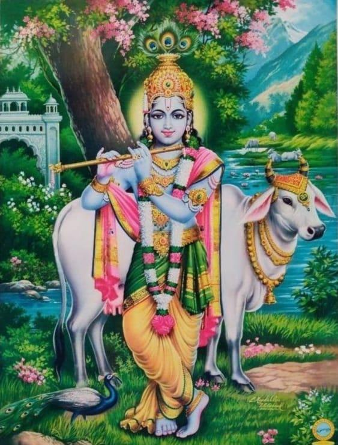

Shrimad Bhagavatam - Book 2 Chapter 89
॥ॐ॥
वसुदेवसुतं देवं कंसचाणूरमर्दनम् ।
देवकीपरमानन्दं कृष्णं वन्दे जगद्गुरुम् ॥
Shrimad Bhagavatam - Book 2
Canto 10
Chapter 89
The three Lords (Brahma, Vishnu and Shiva) put to test by Sage Bhrigu. The dead sons of brahmana brought back to life by Krishna and Arjuna.
श्रीमद्भागवतमहापुराणम्
दशमः स्कन्धः
भृगुमुनिना त्रिदेवानां (ब्रह्मा, विष्णुः, शिवः च) परीक्षणं; कृष्णार्जुनाभ्यां द्विजकुमारायनयनं च नाम एकोननवतितमः अध्यायः

(66 Shlokas)
श्री शुक उवाच
सरस्वत्यास्तटे राजन्नृषयः सत्रमासत ।
वितर्कः समभूत्तेषां त्रिष्वधीशेषु को महान् ॥10.89.1॥
Word-by-word meaning: श्रीः शुकः उवाच Shri Shuka spoke, सरस्वत्याः of the Sarasvati River, तटे on the bank, राजन् O King, ऋषयः the sages, सत्रम् a great sacrificial session, आसत performed/sat, वितर्कः a discussion/dispute, समभूत् arose, तेषाम् among them, त्रिषु in the three, अधीशेषु ruling deities (Brahma, Vishnu, Shiva), कः who, महान् the greatest/supreme
Anvaya: श्रीः शुकः उवाच — राजन्! सरस्वत्यास्तटे ऋषयः सत्रम् आसत। तेषां त्रिष्वधीशेषु कः महान् (इति) वितर्कः समभूत्।
Literal meaning of the anvaya: श्रीः शुकः उवाच Shri Shuka said: राजन् O King Parikshit, सरस्वत्यास्तटे on the banks of the sacred river Sarasvati, ऋषयः the gathered sages, सत्रम् a great sacrificial session आसत were conducting. तेषां त्रिष्वधीशेषु among those three presiding deities (Brahma, Vishnu, and Shiva), कः महान् who is the supreme and greatest of all, इति वितर्कः समभूत् a deep discussion and debate arose among them.
Simple Meaning: Shri Shuka said: “O King, once upon a time, the great sages were performing a sacrificial session on the banks of the sacred Sarasvati River. During their discussions, a profound debate arose among them: among the three primary ruling deities—Brahma, Vishnu, and Shiva—who is truly the greatest?”
तस्य जिज्ञासया ते वै भृगुं ब्रह्मसुतं नृप ।
तज्ज्ञप्त्यै प्रेषयामासुः सोऽभ्यगाद् ब्रह्मणः सभाम् ॥10.89.2॥
Word-by-word meaning: तस्य of that/for that purpose, जिज्ञासया with a desire to know, ते they (the sages), वै indeed, भृगुम् Bhrigu, ब्रह्म-सुतम् the son of Lord Brahma, नृप O King, तत्-ज्ञप्त्यै to determine that truth, प्रेषयामासुः sent, सः he (Sage Bhrigu), अभ्यगात् went, ब्रह्मणः of Lord Brahma, सभाम् to the assembly court
Anvaya: नृप! ते वै तस्य जिज्ञासया तज्ज्ञप्त्यै ब्रह्मसुतं भृगुं प्रेषयामासुः। सः ब्रह्मणः सभाम् अभ्यगात्।
Literal meaning of the anvaya: नृप O King Parikshit, ते वै तस्य जिज्ञासया the sages, with a desire to ascertain that truth, तज्ज्ञप्त्यै for determining who is supreme, ब्रह्मसुतं भृगुं प्रेषयामासुः dispatched Sage Bhrigu, the mind-born son of Lord Brahma. सः ब्रह्मणः सभाम् अभ्यगात् He (Sage Bhrigu) went directly to the assembly court of Lord Brahma.
Simple Meaning: O King, desiring to ascertain the truth of this matter, the sages dispatched Sage Bhrigu, the son of Brahma. Sage Bhrigu first went to the assembly hall of Brahma.
न तस्मै प्रह्वणं स्तोत्रं चक्रे सत्त्वपरीक्षया ।
तस्मै चुक्रोध भगवान् प्रज्वलन् स्वेन तेजसा ॥10.89.3॥
Word-by-word meaning: न not, तस्मै unto him (Brahma), प्रह्वणम् bowing down/prostration, स्तोत्रम् offer of praise/hymn, चक्रे made, सत्त्व-परीक्षया in order to test his quality of sattva (goodness), तस्मै at him (Brahma), चुक्रोध became angry, भगवान् the lord Brahma, प्रज्वलन् blazing, स्वेन by his own, तेजसा by radiant power/anger
Anvaya: (भृगुः) सत्त्वपरीक्षया तस्मै प्रह्वणं स्तोत्रं न चक्रे। भगवान् स्वेन तेजसा प्रज्वलन् तस्मै चुक्रोध।
Literal meaning of the anvaya: (भृगुः) Sage Bhrigu, सत्त्वपरीक्षया in order to test Brahma's quality of sattva (goodness), तस्मै प्रह्वणं स्तोत्रं न चक्रे did not offer him prostration or hymns of praise. भगवान् Lord Brahma, स्वेन तेजसा प्रज्वलन् blazing up with his own fiery energy and indignation, तस्मै चुक्रोध grew angry at Bhrigu.
Simple Meaning: To test Lord Brahma's quality of Sattva, Sage Bhrigu intentionally refrained from offering prostrations or prayers of praise. Feeling insulted, Lord Brahma blazed up with anger at Bhrigu.
स आत्मन्युत्थितं मन्युमात्मजायात्मना प्रभुः ।
अशीशमद् यथा वह्निं स्वयोन्या वारिणाऽऽत्मभूः ॥10.89.4॥
Word-by-word meaning: सः he (Lord Brahma), आत्मनि in himself, उत्थितम् arisen, मन्युम् anger, आत्मजाय toward his own son (Bhrigu), आत्मना by his own intelligence/reasoning, प्रभुः the master/lord, अशीशमत् suppressed/pacified, यथा just as, वह्निम् fire, स्व-योन्या originating from himself, वारिणा by water, आत्म-भूः the self-born Lord Brahma
Anvaya: आत्मभूः प्रभुः सः आत्मना आत्मजाय आत्मनि उत्थितं मन्युं स्वयोन्या वारिणा वह्निम् इव अशीशमत्।
Literal meaning of the anvaya: आत्मभूः प्रभुः सः That self-born lord Brahma, आत्मना through his own wisdom and discrimination, आत्मजाय आत्मनि उत्थितं मन्युं the intense wrath that had arisen within his heart toward his own son, स्वयोन्या वारिणा वह्निम् इव अशीशमत् pacified and extinguished just as water born from fire extinguishes fire itself.
Simple Meaning: However, exercising his wisdom and self-control, Lord Brahma suppressed the anger that had arisen within him toward his son, just as water born from fire extinguishes fire itself.
ततः कैलासमगमत् स तं देवो महेश्वरः ।
परिरब्धुं समारेभे उत्थाय भ्रातरं मुदा ॥10.89.5॥
Word-by-word meaning: ततः thereafter, कैलासम् to Mount Kailasa, अगमत् went, सः he (Sage Bhrigu), तम् him, देवः the divine lord, महेश्वरः Lord Shiva (the great lord), परिरब्धुम् to embrace, समारेभे began/approached, उत्थाय rising up, भ्रातरम् brother, मुदा joyfully
Anvaya: ततः सः कैलासम् अगमत्। देवः महेश्वरः भ्रातरं मुदा उत्थाय परिरब्धुं समारेभे।
Literal meaning of the anvaya: ततः सः कैलासम् अगमत् Then, Sage Bhrigu went to Mount Kailasa. देवः महेश्वरः Lord Shiva, the supreme lord, भ्रातरं (welcoming him as his) brother, मुदा उत्थाय rose up from his seat, परिरब्धुं समारेभे and approached to embrace him.
Simple Meaning: After testing Lord Brahma, Sage Bhrigu went to Mount Kailasa. Upon seeing him, Lord Shiva joyfully rose up from his seat to embrace Bhrigu, greeting him affectionately as a brother.
नैच्छत्त्वमस्युत्पथग इति देवश्चुकोप ह ।
शूलमुद्यम्य तं हन्तुमारेभे तिग्मलोचनः ॥10.89.6॥
Word-by-word meaning: न did not, ऐच्छत् desire/accept, त्वम् you, असि are, उत्पथ-गः unrighteous/deviating from the virtuous path, इति said thus, देवः the divine lord (Shiva), चुकोप grew furious, ह indeed, शूलम् trident, उद्यम्य lifting/raising, तम् him (Bhrigu), हन्तुम् to kill, आरेभे prepared/started, तिग्म-लोचनः whose eyes burned with fierce intensity
Anvaya: (भृगुः तम् आलिङ्गनं) न ऐच्छत्— "त्वम् उत्पथगः असि" इति (उक्त्वान्)। देवः तिग्मलोचनः चुकोप ह, शूलम् उद्यम्य तं हन्तुम् आरेभे।
Literal meaning of the anvaya: (भृगुः तम् आलिङ्गनं) न ऐच्छत् Sage Bhrigu rejected that embrace, and said "त्वम् उत्पथगः असि इति (उक्त्वान्) You are unrighteous and have strayed from the holy path of righteousness." (Hearing this insult), देवः तिग्मलोचनः the divine Lord Shiva, his eyes blazing with intense wrath, चुकोप ह grew terribly enraged, शूलम् उद्यम्य तं हन्तुम् आरेभे and raising his trident, prepared to strike him down.
Simple Meaning: Sage Bhrigu refused Lord Shiva's embrace, insulting him by saying: "You are unrighteous and have strayed from the virtuous path." At this, Lord Shiva grew furious, his eyes blazing with rage, and he raised his trident to strike Bhrigu down.
पतित्वा पादयोर्देवी सान्त्वयामास तं गिरा ।
अथो जगाम वैकुण्ठं यत्र देवो जनार्दनः ॥10.89.7॥
Word-by-word meaning: पतित्वा falling, पादयोः at the feet, देवी devi Parvati, सान्त्वयामास pacified/consoled, तम् him (Shiva), गिरा with words, अथ then, जगाम went, वैकुण्ठम् to Vaikuntha, यत्र where, देवः the divine lord, जनार्दनः Lord Janardana (Vishnu)
Anvaya: (ततः) देवी पादयोः पतित्वा गिरा तं सान्त्वयामास। अथ (भृगुः) वैकुण्ठं जगाम यत्र देवः जनार्दनः (आसीत्)।
Literal meaning of the anvaya: (ततः) देवी पादयोः पतित्वा गिरा तं सान्त्वयामास Then, devi Parvati fell at Lord Shiva's feet and pacified his anger with gentle, soothing words. अथ (भृगुः) वैकुण्ठं जगाम then Sage Bhrigu proceeded to Vaikuntha, देवः देवो जनार्दनः (आसीत्) where the Supreme Lord Janardana resides.
Simple Meaning: Then, Devi Parvati fell at Lord Shiva’s feet and pacified him with soothing words. Thereafter, Sage Bhrigu journeyed onward to Vaikuntha, where Lord Janardana is.
शयानं श्रिय उत्सङ्गे पदा वक्षस्यताडयत् ।
तत उत्थाय भगवान् सह लक्ष्म्या सतां गतिः ॥10.89.8॥
Word-by-word meaning: शयानम् lying down/resting, श्रियः of Goddess Lakshmi, उत्सङ्गे in the lap, पदा with his foot, वक्षसि upon the chest, अताडयत् struck, ततः thereafter, उत्थाय rising up, भगवान् the Supreme Lord, सह with, लक्ष्म्या Lakshmi, सताम् the refuge of the saintly persons, गतिः the ultimate resort/goal
Anvaya: (भृगुः) श्रियः उत्सङ्गे शयानं (भगवन्तं) पदा वक्षसि अताडयत्। ततः सतां गतिः भगवान् लक्ष्म्या सह उत्थाय…
Literal meaning of the anvaya: (भृगुः) श्रियः उत्सङ्गे शयानं (भगवन्तं) वक्षसि अताडयत् Sage Bhrigu struck the Supreme Lord—who was reclining upon the lap of Goddess Lakshmi—upon His chest with his foot. ततः सतां गतिः भगवान् then the Supreme Lord, who is the shelter and refuge of all saintly persons, लक्ष्म्या सह उत्थाय rising along with Lakshmi...
Simple Meaning: Reaching Vaikuntha, Sage Bhrigu found Lord Narayana resting comfortably on the lap of Goddess Lakshmi, and struck the Lord on the chest with his foot. The Supreme Lord—who is the ultimate shelter of all devotees—rising along with Lakshmi...
स्वतल्पादवरुह्याथ ननाम् शिरसा मुनिम् ।
आह ते स्वागतं ब्रह्मन् निषीदात्रासने क्षणम् ।
अजानतामागतान् वः क्षन्तुमर्हथ नः प्रभो ॥10.89.9॥
Word-by-word meaning: स्व-तल्पात् from His own bed, अवरुह्य descending/stepping down, अथ then, ननाम bowed down, शिरसा with His head, मुनिम् unto the sage (Bhrigu), आह spoke, ते unto you, स्वागतम् welcome, ब्रह्मन् O brahmana, निषीद sit down, अत्र here, आसने on the seat, क्षणम् for a moment, अजानताम् unawares/not knowing, आगतान् arrived, वः your presence, क्षन्तुम् to forgive, अर्हथ please be pleased, नः us, प्रभो O master/lord
Anvaya: …अथ स्वतल्पात् अवरुह्य शिरसा मुनिं ननाम। (ततः) आह— “ब्रह्मन्! ते स्वागतम्। अत्र आसने क्षणं निषीद। प्रभो! अजानतां नः आगतान् वः क्षन्तुम् अर्हथ।”
Literal meaning of the anvaya: …अथ स्वतः तल्पात् अवरुह्य then stepping down from His bed, शिरसा मुनिं ननाम Lord Narayana bowed His head down before Sage Bhrigu. (ततः) आह And spoke as follows: “ब्रह्मन्! ते स्वागतम् O holy brahmana, a warm welcome unto you. अत्र आसने क्षणं निषीद please sit down here upon this seat for a moment. प्रभो O lord, अजानतां नः As we were unaware of your arrival, आगतान् वः क्षन्तुम् अर्हथ please forgive us for failing to greet you properly as you entered.”
Simple Meaning: Stepping down from His bed, the Supreme Lord bowed His head low before Sage Bhrigu and said: “O holy brahmana, welcome! Please sit upon this seat for a moment. O master, since we did not notice your arrival, please forgive us for not welcoming you the very instant you entered.”
अतीव कोमलौ तात चरणौ ते महामुने ।
इत्युक्त्वा विप्रचरणौ मर्दयन् स्वेन पाणिना ॥10.89.10॥
Word-by-word meaning: अतीव exceedingly, कोमलौ soft/tender, तात O dear one, चरणौ feet, ते your, महामुने O great sage, इति thus, उक्त्वा having spoken, विप्र-चरणौ the feet of the brahmana, मर्दयन् gently massaging, स्वेन with His own, पाणिना hand
Anvaya: महामुने तात! ते चरणौ अतीव कोमलौ (स्तः) – इति उक्त्वा (भगवान्) स्वेन पाणिना विप्रचरणौ मर्दयन् …
Literal meaning of the anvaya: महामुने तात O great sage, O dear one, ते चरणौ अतीव कोमलौ (स्तः) your feet are exceedingly soft and tender. – इति उक्त्वा having spoken, (भगवान्) स्वेन पाणिना विप्रचरणौ मर्दयन् the Supreme Lord, gently massaging the feet of the brahmana with His own hands..
Simple Meaning: “O great sage, O dear one, your feet are exceedingly soft and tender,” the Lord said. Saying this, the Supreme Lord began to gently massage the feet of the holy brahmana with His own hands.
पुनीहि सहलोकं मां लोकपालांश्च मद्गतान् ।
पादोदकेन भवतस्तीर्थानां तीर्थकारिणा ॥10.89.11॥
Word-by-word meaning: पुनीहि please purify, सह-लोकम् along with the worlds, माम् me, लोक-पालान् the guardians of the worlds, च and, मत्-गतान् connected with me/devoted to me, पाद-उदकेन with the water that has washed the feet, भवतः of your honorable self, तीर्थानाम् of all sacred pilgrimage places, तीर्थ-कारिणा which makes them sacred holy places
Anvaya: तीर्थानां तीर्थकारिणा भवतः पादोदकेन सहलोकं मां मद्गतान् लोकपालान् च पुनीहि।
Literal meaning of the anvaya: तीर्थानां तीर्थकारिणा भवतः पादोदकेन With the water that has washed the feet of your honorable self, which imparts sanctity even to holy places of pilgrimage, सहलोकं मद्गतान् लोकपालान् च पुनीहि please purify me, along with all the worlds and the guardians of the realms who are devoted to me.
Simple Meaning: “Please purify me, along with all the worlds and the guardians of the realms who are devoted to me with the water that has washed your feet—water so sacred that it imparts holiness to the very pilgrimage sites themselves.”
अद्याहं भगवल्लँक्ष्म्या आसमेकान्तभाजनम् ।
वत्स्यत्युरसि मे भूतिर्भवत्पादहतांहसः ॥10.89.12॥
Word-by-word meaning: अद्य today, अहम् I, भगवन् O Lord, लक्ष्म्याः of Lakshmi, आसम् have become, एकान्त-भाजनम् the exclusive repository/abode, वत्स्यति will reside, उरसि on the chest, मे my, भूतिः opulence/good fortune (Goddess Lakshmi), भवत्-पाद-हत-अंहसः whose sins have been eradicated by the touch of your feet
Anvaya: भगवन्! अद्य अहं लक्ष्म्याः एकान्तभाजनम् आसम्। भवत्पादहतांहसः मे उरसि भूतिः (च) वत्स्यति।
Literal meaning of the anvaya: भगवन् O Lord, अद्य अहं today, I have become लक्ष्म्याः एकान्तभाजनम् आसम् the exclusive dwelling place and sole receptacle of Goddess Lakshmi, who belongs eternally to the Supreme Lord. भवत्पादहतांहसः मे उरसि भूतिः (च) वत्स्यति By the touch of your hallowed feet, all my sins have been completely washed away and Goddess Lakshmi will now reside permanently upon My chest.
Simple Meaning: “Today I have truly become the sole and exclusive abode of Goddess Lakshmi, the consort of the Supreme Lord. Because all my sins have been washed away by the touch of your hallowed feet, Goddess Lakshmi will now reside permanently upon My chest.”
श्री शुक उवाच
एवं ब्रुवाणे वैकुण्ठे भृगुस्तन्मन्द्रया गिरा ।
निर्वृतस्तर्पितस्तूष्णीं भक्त्युत्कण्ठोऽश्रुलोचनः ॥10.89.13॥
Word-by-word meaning: श्रीः शुकः उवाच Shri Shuka spoke, एवम् thus, ब्रुवाणे as He was speaking, वैकुण्ठे Lord Narayana (the Lord of Vaikuntha), भृगुः Sage Bhrigu, तत्-मन्द्रया गिरा by His grave and soothing speech, निर्वृतः deeply moved/filled with peace, तर्पितः completely satisfied/gratified, तूष्णीम् silent, भक्ति-उत्कण्ठः choked with intense devotional emotion, अश्रु-लोचनः his eyes filled with tears
Anvaya: श्री शुकः उवाच— वैकुण्ठे एवं ब्रुवाणे (सति), भृगुः तन्मन्द्रया गिरा निर्वृतः तर्पितः (च सन्) भक्त्युत्कण्ठः अश्रुलोचनः तूष्णीं (तस्थौ)।
Literal meaning of the anvaya: श्री शुकः उवाच Shri Shuka spoke: वैकुण्ठे एवं ब्रुवाणे (सति) as Lord Narayana was speaking in this humble manner, भृगुः तन्मन्द्रया गिरा निर्वृतः तर्पितः (च सन्) Sage Bhrigu, moved and gratified by His grave and soothing words, भक्त्युत्कण्ठः अश्रुलोचनः तूष्णीं (तस्थौ) overwhelmed with intense devotion, his eyes overflowing with tears, he remained silent.
Simple Meaning: Shri Shuka said: As Lord Vishnu spoke in this manner, Sage Bhrigu felt moved and satisfied by His solemn and soothing words. Overwhelmed with intense devotion, his eyes brimming with tears, he stood silent.
पुनश्च सत्रमाव्रज्य मुनीनां ब्रह्मवादिनाम् ।
स्वानुभूतमशेषेण राजन् भृगुरवर्णयत् ॥10.89.19॥
Word-by-word meaning: पुनः च and again, सत्रम् to the sacrificial session, आव्रज्य having returned, मुनीनाम् of the sages, ब्रह्म-वादिनाम् who were well-versed in spiritual knowledge/the Absolute Truth, स्व-अनुभूतम् experienced by himself, अशेषेण completely/in full detail, राजन् O King, भृगुः Sage Bhrigu, अवर्णयत् described/narrated
Anvaya: राजन्! पुनः च सत्रम् आव्रज्य ब्रह्मवादिनां मुनीनां (समीपे) भृगुः स्वानुभूतम् अशेषेण अवर्णयत्।
Literal meaning of the anvaya: राजन् O King Parikshit, पुनः च thereafter, सत्रम् आव्रज्य returning once more to the sacrificial arena, भृगुः Sage Bhrigu, ब्रह्मवादिनां मुनीनां (समीपे) in the presence of those great sages learned in spiritual wisdom, स्वानुभूतम् अशेषेण अवर्णयत् described in complete detail everything that he had personally experienced.
Simple Meaning: O King, returning once again to the sacrificial arena on the banks of the Sarasvati, Sage Bhrigu described his personal experiences in detail to the assembled sages who were well-versed in the Absolute Truth.
तन्निशम्याथ मुनयो विस्मिता मुक्तसंशयाः ।
भूयांसं श्रद्दधुर्विष्णुं यतः शान्तिर्यतोऽभयम् ॥10.89.15॥
Word-by-word meaning: तत् that (account), निशम्य hearing, अथ then, मुनयः the sages, विस्मिताः amazed, मुक्त-संशयाः freed from all doubts, भूयांसम् the supreme/greatest, श्रद्दधुः accepted with faith, विष्णुम् Lord Vishnu, यतः from whom, शान्तिः peace, यतः from whom, अभयम् fearlessness
Anvaya: अथ तत् निशम्य मुनयः विस्मिताः मुक्तसंशयाः (सन्तः) विष्णुं भूयांसं श्रद्दधुः, यतः शान्तिः यतः अभयम्।
Literal meaning of the anvaya: अथ Thereafter, तत् निशम्य hearing that detailed narration, मुनयः विस्मिताः the sages were struck with wonder, मुक्तसंशयाः (सन्तः) and becoming liberated from all doubts, विष्णुं भूयांसं श्रद्दधुः they unanimously accepted Lord Vishnu as the supreme deity, यतः शान्तिः यतः अभयम् for from Him alone comes peace and from Him alone comes fearlessness.
Simple Meaning: Hearing Sage Bhrigu's account, the sages were filled with wonder and were freed from all doubts. They concluded with firm faith that Lord Vishnu is indeed Supreme. From Him alone comes peace and fearlessness.
धर्मः साक्षाद् यतो ज्ञानं वैराग्यं च तदन्वितम् ।
ऐश्वर्य चाष्टधा यस्माद् यशश्चात्ममलापहम् ॥10.89.16॥
Word-by-word meaning: धर्मः righteousness/dharma, साक्षात् directly, यतः from whom, ज्ञानम् divine knowledge, वैराग्यम् renunciation, च and, तत्-अन्वितम् accompanied by that, ऐश्वर्यम् opulence/sovereignty, च and, अष्टधा eightfold, यस्मात् from whom, यशः fame, च and, आत्म-मल-अपहम् which cleanses the impurities of the self
Anvaya: यतः साक्षात् धर्मः, तदन्वितं ज्ञानं वैराग्यं च, यस्मात् अष्टधा ऐश्वर्यं च, आत्ममलापहं यशः च (भवति)।
Literal meaning of the anvaya: यतः From whom, साक्षात् धर्मः dharma arises directly, तदन्वितं ज्ञानं वैराग्यं च and accompanied by that dharma comes spiritual knowledge and detachment; यस्मात् from whom, अष्टधा ऐश्वर्यं च the eightfold mystic opulences originate, आत्ममलापहं यशः च (भवति) and whose glorious fame removes all impurities of the mind and self.
Simple Meaning: For from Him dharma emanates directly, along with spiritual knowledge and detachment; from Him originate the eightfold mystic opulences, and His glorious fame alone cleanses all impurities from the mind and soul.
मुनीनां न्यस्तदण्डानां शान्तानां समचेतसाम् ।
अकिञ्चनानां साधूनां यमाहुः परमां गतिम् ॥10.89.17॥
Word-by-word meaning: मुनीनाम् of the sages, न्यस्त-दण्डानाम् who have cast aside all violence/punishment, शान्तानाम् who are peaceful, सम-चेतसाम् who are equal-minded/equipoised, अकिञ्चनानाम् who possess nothing/are without material possessions, साधूनाम् of the saintly persons, यम् आहुः whom they call, परमाम् the supreme, गतिम् destination/refuge
Anvaya: न्यस्तदण्डानां शान्तानां समचेतसाम् अकिञ्चनानां साधूनां मुनीनां यं परमां गतिम् आहुः।
Literal meaning of the anvaya: न्यस्तदण्डानां शान्तानां समचेतसाम् अकिञ्चनानां साधूनां मुनीनां Of those saintly sages who have abandoned all violence, who are serene, equipoised in all circumstances, devoid of material possessions, and virtuous, यं whom, परमां गतिम् आहुः they declare to be the supreme ultimate destination and shelter.
Simple Meaning: Whom all the saintly sages—who are peaceful, equipoised, free from material possessions, and have renounced all violence—declare to be their ultimate destination and supreme refuge.
सत्त्वं यस्य प्रिया मूर्तिर्ब्राह्मणास्त्विष्टदेवताः ।
भजन्त्यनाशिषः शान्ता यं वा निपुणबुद्धयः ॥10.89.18॥
Word-by-word meaning: सत्त्वम् pure goodness (sattva), यस्य of whom, प्रिया beloved, मूर्तिः form/embodiment, ब्राह्मणाः the brahmanas, तु indeed, इष्ट-देवताः cherished deities/objects of worship, भजन्ति worship/serve, अनाशिषः free from material desires, शान्ताः peaceful/tranquil, यम् whom, वा or, निपुण-बुद्धयः those of profound and subtle intellect
Anvaya: यस्य सत्त्वं प्रिया मूर्तिः, ब्राह्मणाः तु इष्टदेवताः, यम् अनाशिषः शान्ताः निपुणबुद्धयः भजन्ति।
Literal meaning of the anvaya: यस्य सत्त्वं प्रिया मूर्तिः Whose dear form is pure sattva (goodness), ब्राह्मणाः तु इष्टदेवताः while the brahmanas are His cherished deities. यम् Whom, अनाशिषः शान्ताः the tranquil sages who are free from material desires, निपुणबुद्धयः along with those endowed with subtle intellect, भजन्ति worship.
Simple Meaning: Whose very form is pure goodness (sattva), to whom the brahmanas are extremely dear as His own cherished deities, and whom tranquil sages free from all material desires—endowed with subtle intellect—constantly worship.
त्रिविधाकृतयस्तस्य राक्षसा असुराः सुराः ।
गुणिन्या मायया सृष्टाः सत्त्वं तत्तीर्थसाधनम् ॥10.89.19॥
Word-by-word meaning: त्रि-विधाः of three kinds/threefold, कृतयः creations/manifestations, तस्य His (Lord Vishnu's guna-avatars or forms), राक्षसाः the rakshasas, असुराः the asuras, सुराः the suras/devas, गुणिन्या endowed with the gunas (modes of material nature), मायया by His illusory energy (maya), सृष्टाः created, सत्त्वम् pure goodness (sattva), तत् that, तीर्थ-साधनम् the means of spiritual advancement/purification
Anvaya: तस्य त्रिविधाः कृतयः (अर्थात्) राक्षसाः, असुराः, सुराः (च), गुणिन्या मायया सृष्टाः। सत्त्वं तत् तीर्थसाधनम्।
Literal meaning of the anvaya: तस्य त्रिविधाः कृतयः His threefold manifestations or creations—viz. राक्षसाः, असुराः, सुराः (च) the rakshasas, asuras, and suras—are all गुणिन्या मायया सृष्टाः fashioned through His maya which is endowed with the three modes of material nature (gunas). सत्त्वं तत् तीर्थसाधनम् Among these, pure sattva (goodness) serves as the true means of spiritual purification and liberation.
Simple Meaning: The three classes of beings—the rakshasas, asuras, and suras—are His threefold creations brought forth through His maya, which is imbued with the modes of material nature. Among them, pure sattva (goodness) alone serves as the genuine instrument for spiritual purification.
श्री शुक उवाच
एवं सारस्वता विप्रा नृणां संशयनुत्तये ।
पुरुषस्य पदाम्भोजसेवया तद्गतिं गताः ॥10.89.20॥
Word-by-word meaning: श्रीः शुकः उवाच Shri Shuka said, एवम् thus, सारस्वताः dwelling on the banks of the Sarasvati, विप्राः the brahmanas (sages), नृणाम् of human beings, संशय-नुत्तये for dispelling the doubts, पुरुषस्य of the Supreme Person (Lord Vishnu), पद-अम्भोज-सेवायाः through the service of His lotus feet, तत्-गतिम् His supreme destination/abode, गताः attained
Anvaya: श्री शुकः उवाच— एवं सारस्वता विप्राः पुरुषस्य पदाम्भोजसेवया नृणां संशयनुत्तये तद्गतिं गताः।
Literal meaning of the anvaya: श्री शुकः उवाच Shri Shuka said: एवं Thus, सारस्वता विप्राः those brahmanas residing on the banks of the Sarasvati river, पुरुषस्य पदाम्भोजसेवया through their unswerving devotion and service to the lotus feet of the Supreme Lord, नृणां संशयनुत्तये in order to dispel the doubts of all mankind, तद्गतिं गताः attained His supreme and eternal abode.
Simple Meaning: Shri Shuka said: Thus, those brahmanas residing on the banks of the Sarasvati, having dispelled the doubts of mankind through their realization and by dedicating themselves to the service of the Supreme Lord's lotus feet, ultimately attained His supreme abode.
सूत उवाच
इत्येतन्मुनितनयास्यपद्मगन्धपीयूषं भवभयभित् परस्य पुंसः ।
सुश्लोकं श्रवणपुटैः पिबत्यभीक्ष्णं पान्थोऽध्वभ्रमणपरिश्रमं जहाति ॥10.89.21॥
Word-by-word meaning: सूतः उवाच Suta said, इति thus, एतत् this, मुनि-तनय-आस्य-पद्म-गन्ध-पीयूषम् nectar carrying the fragrance of the lotus mouth of Shuka (the son of the sage Vyasa), भव-भय-भित् which destroys the fear of worldly existence, परस्य पुंसः of the Supreme Person, सु-श्लोकम् the glorious account, श्रवण-पुटैः through the cups of the ears, पिबति drinks, अभीक्ष्णम् continuously/repeatedly, पान्थः a traveler (on the path of life), अध्व-भ्रमण-परिश्रमम् the exhaustion from wandering on the path of material existence, जहाति casts off/relinquishes
Anvaya: सूत उवाच— मुनितनयास्यपद्मगन्धपीयूषं भवभयभित् परस्य पुंसः एतत् सुश्लोकं यः पान्थः श्रवणपुटैः अभीक्ष्णं पिबति, (सः) अध्वभ्रमणपरिश्रमं जहाति।
Literal meaning of the anvaya: सूत उवाच Suta said: मुनितनयास्यपद्मगन्धपीयूषं this narrative which is like nectar carrying the celestial fragrance of the lotus mouth of Sri Shuka, son of Sage Vyasa, भवभयभित् परस्य पुंसः एतत् सुश्लोकं and which is the glorious account of the Supreme Person that destroys all fear of worldly existence, यः पान्थः whichever traveler wandering through the cycle of births and deaths, श्रवणपुटैः अभीक्ष्णं पिबति drinks continuously through the cups of his ears, (सः) अध्वभ्रमणपरिश्रमं जहाति he completely casts off all the fatigue and exhaustion born of his long journey in material existence.
Simple Meaning: Suta said: This glorious account of the Supreme Person—flowing as nectar carrying the exquisite fragrance of the lotus mouth of Shri Shuka—destroys all fear of material existence. Any weary traveler on the path of life who drinks this nectar repeatedly through the cups of his ears casts off all the exhaustion of his long wandering through the cycle of birth and death.
श्री शुक उवाच
एकदा द्वारवत्यां तु विप्रपत्न्याः कुमारकः ।
जातमात्रो भुवं स्पृष्ट्वा ममार किल भारत ॥10.89.22॥
Word-by-word meaning: श्रीः शुकः उवाच Shri Shuka said, एकदा once upon a time, द्वारवत्याम् in the city of Dwaraka, तु indeed, विप्र-पत्न्याः of the wife of a brahmana, कुमारकः the infant son, जात-मात्रः as soon as he was born, भुवम् the earth, स्पृष्ट्वा touching, ममार died, किल indeed, भारत O descendant of Bharata (King Parikshit)
Anvaya: श्री शुकः उवाच— भारत! एकदा तु द्वारवत्यां विप्रपत्न्याः कुमारकः जातमात्रः भुवं स्पृष्ट्वा ममार किल।
Literal meaning of the anvaya: श्री शुकः उवाच Shri Shuka said: भारत O King Parikshit, descendant of Bharata, एकदा तु once indeed, द्वारवत्यां in the city of Dwaraka, विप्रपत्न्याः कुमारकः the newborn infant son of a brahmana's wife, जातमात्रः the very moment he was born, भुवं स्पृष्ट्वा touching the earth, ममार किल died immediately.
Simple Meaning: Shri Shuka said: “O Parikshit, descendant of Bharata, once in the city of Dwaraka, a son was born to a brahmana's wife, but the infant died the very moment he touched the ground.”
विप्रो गृहीत्वा मृतकं राजद्वार्युपधाय सः ।
इदं प्रोवाच विलपन्नातुरो दीनमानसः ॥10.89.23॥
Word-by-word meaning: विप्रः the brahmana, गृहीत्वा taking up, मृतकम् the dead body of the child, राज-द्वारी at the royal gate/door of the King's palace, उपधाय placing down, सः he, इदम् this, प्रोवाच spoke, विलपन् lamenting, आतुरः distressed, दीन-मानसः dejected in heart
Anvaya: सः आतुरः दीनमानसः विप्रः मृतकं गृहीत्वा राजद्वारि उपधाय विलपन् इदं प्रोवाच।
Literal meaning of the anvaya: सः आतुरः दीनमानसः विप्रः That distressed and heart-broken brahmana, मृतकं गृहीत्वा picking up the dead body of his child, राजद्वारि उपधाय and placing it directly before the gate of the royal palace, विलपन् इदं प्रोवाच began to lament bitterly and spoke as follows.
Simple Meaning: Carrying the dead body of his infant, the grief-stricken and heart-broken brahmana placed the child at the palace gate and began to lament bitterly, speaking these words.
ब्रह्मद्विषः शठधियो लुब्धस्य विषयात्मनः ।
क्षत्रबन्धोः कर्मदोषात् पञ्चत्वं मे गतोऽर्भकः ॥10.89.24॥
Word-by-word meaning: ब्रह्म-द्विषः of one who hates the brahmanas, शठ-धियः of envious and deceitful intellect, लुब्धस्य of one who is greedy, विषय-आत्मनः of one devoted to sense enjoyment, क्षत्र-बन्धोः of a disqualified king/degraded kshatriya, कर्म-दोषात् due to the sinful misdeeds, पञ्चत्वम् death (dissolution into the five material elements), मे my, गतः has attained, अर्भकः infant child
Anvaya: ब्रह्मद्विषः शठधियः लुब्धस्य विषयात्मनः क्षत्रबन्धोः कर्मदोषात् मे अर्भकः पञ्चत्वं गतः।
Literal meaning of the anvaya: ब्रह्मद्विषः शठधियः लुब्धस्य विषयात्मनः क्षत्रबन्धोः कर्मदोषात् On account of the evil deeds of this disqualified kshatriya king—who hates the brahmanas, possesses a deceitful mind, is full of greed, and is addicted to sense gratification—मे अर्भकः पञ्चत्वं गतः my child has met with (premature) death.
Simple Meaning: Because of the sinful misdeeds of this fallen king—who is envious of brahmanas, deceitful, greedy, and devoted solely to sense pleasure—my infant child has died!
हिंसाविहारं नृपतिं दुःशीलमजितेन्द्रियम् ।
प्रजा भजन्त्यः सीदन्ति दरिद्रा नित्यदुःखिताः ॥10.89.25॥
Word-by-word meaning: हिंसा-विहारम् one whose pleasure lies in violence, नृपतिम् a king, दुःशीलम् bad-charactered/immoral, अ-जित-इन्द्रियम् having uncontrolled senses, प्रजाः the citizens/subjects, भजन्त्यः serving/following, सीदन्ति suffer/deteriorate, दरिद्राः impoverished, नित्य-दुःखिताः perpetually afflicted with sorrow
Anvaya: हिंसाविहारं दुःशीलम् अजितेन्द्रियं नृपतिं भजन्त्यः प्रजाः दरिद्राः नित्यदुःखिताः (सत्यः) सीदन्ति।
Literal meaning of the anvaya: हिंसाविहारं दुःशीलम् अजितेन्द्रियं नृपतिं भजन्त्यः प्रजाः Citizens who serve and live under a king who takes pleasure in violence, lacks moral character, and has uncontrolled senses, दरिद्राः नित्यदुःखिताः (सत्यः) सीदन्ति become utterly impoverished, perpetually afflicted with grief, and suffer ruin.
Simple Meaning: Subjects who live under a king who delights in violence, lacks character, and has no control over his senses become impoverished and perpetually miserable, suffering continuous affliction.
एवं द्वितीयं विप्रर्षिस्तृतीयं त्वेवमेव च ।
विसृज्य स नृपद्वारि तां गाथां समगायत ॥10.89.26॥
Word-by-word meaning: एवम् in the same manner, द्वितीयम् the second child, विप्र-ऋषिः the holy brahmana, तृतीयम् the third child, तु indeed, एवम् एव च in that exact same way, विसृज्य leaving/placing down, सः he, नृप-द्वारि at the gate of the King's palace, ताम् that, गाथाम् song of reproach/lamentation, समगायत chanted repeatedly
Anvaya: एवं सः विप्रर्षिः द्वितीयं तृतीयं च तु एवम् एव नृपद्वारि विसृज्य तां गाथां समगायत।
Literal meaning of the anvaya: एवं In this way, सः विप्रर्षिः that holy brahmana, द्वितीयं तृतीयं च तु एवम् एव when his second and third sons likewise died at birth, नृपद्वारि at the palace door of the King, विसृज्य leaving their bodies, तां गाथां समगायत repeatedly sang that very same song of bitter grief and reproach against the ruler.
Simple Meaning: When his second and third infant sons died at birth, the holy brahmana placed their bodies at the palace gate in the exact same manner, loudly chanting those very same verses of grief and reproach against the King.
तामर्जुन उपश्रुत्य कर्हिचित् केशवान्तिके ।
परेते नवमे बाले ब्राह्मणं समभाषत ॥10.89.27॥
Word-by-word meaning: ताम् that (song of lamentation/grief), अर्जुनः Arjuna, उपश्रुत्य hearing, कर्हिचित् once upon a time, केशव-अन्तिके in the presence of Keshava (Krishna), परेते when had died, नवमे the ninth, बाले child, ब्राह्मणम् the brahmana, समभाषत spoke/addressed
Anvaya: कर्हिचित् केशवान्तिके ताम् उपश्रुत्य, नवमे बाले परेते, अर्जुनः ब्राह्मणं समभाषत।
Literal meaning of the anvaya: कर्हिचित् Once, केशवान्तिके in the presence of Krishna, ताम् उपश्रुत्य hearing that lamentation of the brahmana, नवमे बाले परेते upon the death of the ninth child, अर्जुनः Arjuna, ब्राह्मणं समभाषत addressed the grieving brahmana.
Simple Meaning: Once, hearing that lamentation in the presence of Krishna upon the death of the brahmana's ninth newborn child, Arjuna spoke to the grieving father.
किंस्विद् ब्रह्मंस्त्वन्निवासे इह नास्ति धनुर्धरः ।
राजन्यबन्धुरेते वै ब्राह्मणाः सत्र आसते ॥10.89.28॥
Word-by-word meaning: किम् स्विद् what pray/how is this, ब्रह्मन् O Brahmana, त्वत्-निवासे in your dwelling place/city (Dwaraka), इह here, न अस्ति there is not, धनुर्धरः a wielder of the bow/warrior, राजन्य-बन्धवः kshatriyas, एते these, वै indeed, ब्राह्मणाः the brahmanas, सत्रे in the sacrificial arena, आसते are sitting
Anvaya: ब्रह्मन्! इह त्वत्निवासे धनुर्धरः किंस्विद् न अस्ति? एते वै राजन्यबन्धवः, (अथवा) ब्राह्मणाः सत्रे आसते।
Literal meaning of the anvaya: ब्रह्मन् O Brahmana, इह त्वत्निवासे in your city of Dvaraka, धनुर्धरः किंस्विद् न अस्ति is there truly no capable archer or protector present here? एते वै राजन्यबन्धवः are these kshatriyas, (अथवा) ब्राह्मणाः सत्रे आसते like the brahmanas sitting engaged in sacrificial rites (while ignoring injustice)?
Simple Meaning: O Brahmana, is there truly no archer or protector living in your city? Or are the rulers here merely degraded kshatriyas, or like the brahmanas absorbed in ritual sacrifices?
धनदारात्मजापृक्ता यत्र शोचन्ति ब्राह्मणाः ।
ते वै राजन्यवेषेण नटा जीवन्त्यसुम्भराः ॥10.89.29॥
Word-by-word meaning: धन-दार-आत्मज-अपृक्ताः deprived of wealth, wife, and children, यत्र where, शोचन्ति grieve, ब्राह्मणाः the brahmanas (or righteous citizens), ते they, वै indeed, राजन्य-वेषेण in the guise of royal figures/ruling kshatriyas, नटाः actors/pretenders, जीवन्ति live/survive, असुम्-भराः maintaining merely their life breath/living only to fill their bellies
Anvaya: यत्र धनदारात्मजापृक्ताः ब्राह्मणाः शोचन्ति, ते वै राजन्यवेषेण असुम्भराः नटाः जीवन्ति।
Literal meaning of the anvaya: यत्र Where in a kingdom, धनदारात्मजापृक्ताः ब्राह्मणाः deprived of wealth, wife, and children, the brahmanas, शोचन्ति grieve in constant misery, वै ते राजन्यवेषेण असुम्भराः नटाः जीवन्ति indeed, those who rule in the guise of kings are merely actors dressed as royalty whose only purpose is maintaining their own life breath.
Simple Meaning: In a kingdom, where the brahmanas are deprived of wealth, wives, and children and are reduced to grief, those who rule in royal guise are nothing more than actors dressed as kings, living merely to fill their bellies.
अहं प्रजा वां भगवन् रक्षिष्ये दीनयोरिह ।
अनिस्तीर्णप्रतिज्ञोऽग्निं प्रवेक्ष्ये हतकल्मषः ॥10.89.30॥
Word-by-word meaning: अहम् I (Arjuna), प्रजाः the children/offspring, वाम् of you two (the brahmana and his wife), भगवन् O venerable sir, रक्षिष्ये shall protect, दीनयोः of the distressed couple, इह in this place/situation, अनिस्तीर्ण-प्रतिज्ञः failing to fulfill my vow, अग्निम् the fire, प्रवेक्ष्ये I shall enter, हत-कल्मषः my sins purged/cleansed of fault
Anvaya: भगवन्! इह दीनयोः वां प्रजाः अहं रक्षिष्ये। अनिस्तीर्णप्रतिज्ञः (चेत्), हतकल्मषः (भूत्वा) अग्निं प्रवेक्ष्ये।
Literal meaning of the anvaya: भगवन् O revered sir, इह दीनयोः वां in this tragic plight, the offspring of you two distressed parents, अहं रक्षिष्ये I shall personally protect. अनिस्तीर्णप्रतिज्ञः (चेत्) if I fail to fulfill this solemn vow, हतकल्मषः (भूत्वा) having my sins purged through self-immolation, अग्निं प्रवेक्ष्ये I shall enter the sacrificial fire.
Simple Meaning: O venerable sir, I shall personally protect the children of you two distressed parents! If I fail to fulfill this solemn vow, I shall purify myself of all fault by entering the flaming fire.
ब्राह्मण उवाच
सङ्कर्षणो वासुदेवः प्रद्युम्नो धन्विनां वरः ।
अनिरुद्धोऽप्रतिरथो न त्रातुं शक्नुवन्ति यत् ॥10.89.31॥
Word-by-word meaning: ब्राह्मणः उवाच the brahmana said, सङ्कर्षणः Sankarshana - Balarama, वासुदेवः Vaasudeva - Krishna, प्रद्युम्नः Pradyumna, धन्विनाम् of archers/warriors, वरः the best/foremost, अनिरुद्धः Aniruddha, अप्रतिरथः invincible warrior/without a rival warrior, न not, त्रातुम् to protect/save, शक्नुवन्ति are able, यत् which
Anvaya: ब्राह्मणः उवाच— धन्विनां वरः सङ्कर्षणः, वासुदेवः, प्रद्युम्नः, अप्रतिरथः अनिरुद्धः च यत् त्रातुं न शक्नुवन्ति...
Literal meaning of the anvaya: ब्राह्मण उवाच The brahmana said: धन्विनां वरः The foremost among all archers and warriors Balarama (Sankarshana), वासुदेवः Krishna, प्रद्युम्नः Pradyumna, अप्रतिरथः अनिरुद्धः च and the invincible Aniruddha, यत् त्रातुं न शक्नुवन्ति which child none of them could save or protect...
Simple Meaning: The brahmana said: Neither Sankarshana (Balarama), nor Vaasudeva (Krishna), nor Pradyumna—the greatest of archers—nor the invincible Aniruddha could protect my infants...
तत् कथं नु भवान् कर्म दुष्करं जगदीश्वरैः ।
चिकीर्षसि त्वं बालिश्यात् तन्न श्रद्दध्महे वयम् ॥10.89.32॥
Word-by-word meaning: तत् therefore, कथम् how, नु indeed, भवान् you, कर्म task/deed, दुष्करम् impossible to accomplish, जगद्-ईश्वरैः by the great lords of the universe (such as Krishna and Balarama), चिकीर्षसि desire to undertake, त्वम् you, बालिश्यात् out of childish foolishness/vanity, तत् that, न not, श्रद्दध्महे believe/accept with faith, वयम् we
Anvaya: तत् जगदीश्वरैः दुष्करं कर्म भवान् बालिश्यात् चिकीर्षसि, तत् कथं नु? वयं तत् न श्रद्दध्महे।
Literal meaning of the anvaya: तत् Therefore, जगदीश्वरैः दुष्करं कर्म a feat impossible to accomplish even by the sovereign lords of the universe, भवान् बालिश्यात् चिकीर्षसि you wish to undertake out of childish vanity, तत् कथं नु how can this possibly be? वयं तत् न श्रद्दध्महे we cannot place any faith in your words.
Simple Meaning: How then can you, out of childish vanity, attempt a task that even the great lords of the universe could not accomplish? We cannot put any faith in your declaration.
अर्जुन उवाच
नाहं सङ्कर्षणो ब्रह्मन् न कृष्णः कार्ष्णिरेव च ।
अहं वा अर्जुनो नाम गाण्डीवं यस्य वै धनुः ॥10.89.33॥
Word-by-word meaning: अर्जुनः उवाच Arjuna spoke, न not, अहम् I, सङ्कर्षणः Sankarshana - Balarama, ब्रह्मन् O brahmana, न not, कृष्णः Krishna, कार्ष्णिः the son of Krishna - Pradyumna, एव indeed, च and, अहम् I, वै truly, अर्जुनः नाम named Arjuna, गाण्डीवम् Gandiva, यस्य whose, वै indeed, धनुः bow
Anvaya: अर्जुनः उवाच— ब्रह्मन्! अहं सङ्कर्षणः न, कृष्णः न, कार्ष्णिः एव च न, अहं वा अर्जुनः नाम (अस्मि), यस्य धनुः वै गाण्डीवम्।
Literal meaning of the anvaya: अर्जुनः उवाच Arjuna said: ब्रह्मन् O brahmana, अहं सङ्कर्षणः न I am not Balarama, कृष्णः न nor am I Krishna, कार्ष्णिः एव च न nor am I Pradyumna, अहं वा अर्जुनः नाम (अस्मि) I am indeed Arjuna by name, यस्य धनुः वै गाण्डीवम् whose bow is the mighty Gandiva.
Simple Meaning: Arjuna said: O brahmana, I am neither Sankarshana, nor Krishna, nor Pradyumna, the son of Krishna. I am Arjuna, the wielder of the formidable bow Gandiva!
मावमंस्था मम ब्रह्मन् वीर्यं त्र्यम्बकतोषणम् ।
मृत्युं विजित्य प्रधने आनेष्ये ते प्रजां प्रभो ॥10.89.34॥
Word-by-word meaning: मा do not, अवमंस्थाः under-estimate/treat with disrespect, मम my, ब्रह्मन् O brahmana, वीर्यम् prowess/martial power, त्र्यम्बक-तोषणम् capable of satisfying/pleasing Tryambaka - Lord Shiva, मृत्युम् death, विजित्य having conquered, प्रधने in battle, आनेष्ये I shall bring back, ते your, प्रजाम् children, प्रभो O master/revered sir
Anvaya: ब्रह्मन्! मम त्र्यम्बकतोषणं वीर्यं मा अवमंस्थाः। प्रभो! प्रधने मृत्युं विजित्य (अहं) ते प्रजाम् आनेष्ये।
Literal meaning of the anvaya: ब्रह्मन् O brahmana, मम त्र्यम्बकतोषणं वीर्यं my martial prowess which once satisfied and pleased Lord Shiva (Tryambaka) in combat, मा अवमंस्थाः do not disrespect or underestimate. प्रभो O revered master! प्रधने in battle, मृत्युं विजित्य conquering even death itself, (अहं) ते प्रजाम् आनेष्ये I shall bring back your children,
Simple Meaning: O brahmana, do not underestimate my prowess, which once satisfied even Lord Shiva (Tryambaka)! Having conquered even death in battle, O master, I shall bring your children back!
एवं विश्रम्भितो विप्रः फाल्गुनेन परंतप ।
जगाम स्वगृहं प्रीतः पार्थवीर्यं निशामयन् ॥10.89.35॥
Word-by-word meaning: एवम् thus, विश्रम्भितः reassured/given confidence, विप्रः the brahmana, फाल्गुनेन by Phalguna - Arjuna, परंतप O scorcher of enemies (King Parikshit), जगाम went, स्व-गृहम् to his own home, प्रीतः pleased/satisfied, पार्थ-वीर्यम् the heroic prowess of Arjuna (Partha), निशामयन् hearing/contemplating
Anvaya: परंतप! फाल्गुनेन एवं विश्रम्भितः (सः) विप्रः पार्थवीर्यं निशामयन् प्रीतः स्वगृहं जगाम।
Literal meaning of the anvaya: परंतप O King Parikshit, scorcher of enemies, फाल्गुनेन एवं विश्रम्भितः thus deeply reassured by Arjuna, (सः) विप्रः that brahmana, पार्थवीर्यं निशामयन् contemplating the unmatched prowess of Partha, प्रीतः स्वगृहं जगाम returned to his home feeling joyful and confident.
Simple Meaning: O Parikshit, scorcher of enemies! Thus fully reassured by Arjuna and hearing of his formidable prowess, the brahmana returned home feeling joyful and confident.
प्रसूतिकाल आसन्ने भार्याया द्विजसत्तमः ।
पाहि पाहि प्रजां मृत्योरित्याहार्जुनमातुरः ॥10.89.36॥
Word-by-word meaning: प्रसूति-काले when the time of delivery/childbirth, आसन्ने arrived, भार्यायाः of his wife, द्विज-सत्तमः the best of brahmanas, पाहि पाहि save save/protect protect, प्रजाम् child/offspring, मृत्योः from death, इति thus, आह spoke/called out, अर्जुनम् to Arjuna, आतुरः distressed/agitated
Anvaya: भार्यायाः प्रसूतिकाले आसन्ने (सः) आतुरः द्विजसत्तमः अर्जुनं “मृत्योः प्रज्ञां पाहि पाहि” इति आह।
Literal meaning of the anvaya: भार्यायाः प्रसूतिकाले आसन्ने When the time of childbirth for his wife arrived, (सः) आतुरः द्विजसत्तमः that distressed best of brahmanas, अर्जुनं “मृत्योः प्रज्ञां पाहि पाहि” इति आह addressed Arjuna, calling out: "Save, save my child from death!"
Simple Meaning: When the time of delivery arrived for his wife, the distressed brahmana approached Arjuna in great agitation, calling out: "Save, save my child from the clutches of death!"
स उपस्पृश्य शुच्यम्भो नमस्कृत्य महेश्वरम् ।
दिव्यान्यस्त्राणि संस्मृत्य सज्यं गाण्डीवमाददे ॥10.89.37॥
Word-by-word meaning: सः he (Arjuna), उपस्पृश्य touching water (performing ritual purification/achamana), शुचि-अम्भः with pure water, नमस्कृत्य paying obeisance/bowing to, महेश्वरम् Lord Shiva (Maheshvara), दिव्यानि divine, अस्त्राणि celestial weapons, संस्मृत्य remembering/invoking mentally, सज्यम् strung, गाण्डीवम् the Gandiva bow, आददे took up/grasped
Anvaya: सः शुच्यम्भः उपस्पृश्य, महेश्वरं नमस्कृत्य, दिव्यानि अस्त्राणि संस्मृत्य, सज्यं गाण्डीवम् आददे।
Literal meaning of the anvaya: सः He (Arjuna), शुच्यम्भः उपस्पृश्य performing ritual purification with pure water, महेश्वरं नमस्कृत्य bowing in reverence to Lord Shiva, दिव्यानि अस्त्राणि संस्मृत्य mentally invoking and remembering his divine celestial weapons, सज्यं गाण्डीवम् आददे took up the well-strung Gandiva bow.
Simple Meaning: Having performed ritual purification with clean water, bowed in reverence to Lord Shiva, and mentally invoked his celestial weapons, Arjuna took up the well-strung Gandiva bow.
न्यरुणत् सूतिकागारं शरैर्नानास्त्रयोजितैः ।
तिर्यगूर्ध्वमधः पार्थश्चकार शरपञ्जरम् ॥10.89.38॥
Word-by-word meaning: न्यरुणत् encircled/guarded, सूतिका-गारम् the maternity chamber, शरैः with arrows, नाना-अस्त्र-योजितैः endowed with various celestial weapons, तिर्यक् horizontally, ऊर्ध्वम् upward, अधः downward, पार्थः son of Pritha - Arjuna, चकार created/formed, शर-पञ्जरम् a cage of arrows
Anvaya: पार्थः नानास्त्रयोजितैः शरैः सूतिकागारं न्यरुणत्, तिर्यग् ऊर्ध्वम् अधः च शरपञ्जरं चकार।
Literal meaning of the anvaya: पार्थः The son of Pritha - Arjuna, नानास्त्रयोजितैः शरैः using arrows empowered with various celestial weapons, सूतिकागारं न्यरुणत् completely encircled and guarded the maternity chamber, तिर्यग् ऊर्ध्वम् अधः च horizontally, vertically above, and below, शरपञ्जरं चकार formed a protective cage of arrows.
Simple Meaning: Empowered with various celestial weapons, Arjuna completely encircled the maternity chamber with his arrows, forming an impenetrable cage of shafts extending horizontally, upward, and downward on all sides.
ततः कुमारः संजातो विप्रपत्न्या रुदन् मुहुः ।
सद्योऽदर्शनमापेदे सशरीरो विहायसा ॥10.89.39॥
Word-by-word meaning: ततः then, कुमारः a son, संजातः was born, विप्र-पत्न्याः to the wife of the brahmana, रुदन् crying, मुहुः repeatedly, सद्यः instantly/immediately, अदर्शनम् invisibility/disappearance, आपेदे attained/went to, स-शरीरः with the body, विहायसा through the sky/upper atmosphere
Anvaya: ततः विप्रपत्न्याः कुमारः संजातः। मुहुः रुदन् सशरीरः विहायसा सद्यः अदर्शनम् आपेदे।
Literal meaning of the anvaya: ततः Then, विप्रपत्न्याः कुमारः संजातः a child was born to the wife of the brahmana. मुहुः रुदन् Crying repeatedly, सशरीरः in his physical body, विहायसा through the sky, सद्यः अदर्शनम् आपेदे immediately vanished into thin air.
Simple Meaning: Thereupon, a son was born to the brahmana's wife. But even as the infant cried out, he instantly vanished into thin air through the sky along with his physical body.
तदाऽऽह विप्रो विजयं विनिन्दन् कृष्णसन्निधौ ।
मौढ्यं पश्यत मे योऽहं श्रद्दधे क्लीबकत्थनम् ॥10.89.40॥
Word-by-word meaning: तदा then, आह spoken/said, विप्रः the brahmana, विजयम् Vijaya (Arjuna), विनिन्दन् censuring/reviling, कृष्ण-सन्निधौ in the presence of Krishna, मौढ्यम् foolishness/delusion, पश्यत behold, मे my, यः who, अहम् I, श्रद्दधे trusted/placed faith in, क्लीब-कत्थनम् the boastful talk of an impotent person
Anvaya: तदा विप्रः कृष्णसन्निधौ विजयं विनिन्दन् आह— “मे मौढ्यं पश्यत! यः अहं क्लीबकत्थनं श्रद्दधे।”
Literal meaning of the anvaya: तदा विप्रः Then, the brahmana, कृष्णसन्निधौ in the presence of Krishna, विजयं विनिन्दन् censuring Vijaya (Arjuna), आह spoke: मे मौढ्यं पश्यत behold my foolishness! यः अहं for I am the one who, क्लीबकत्थनं श्रद्दधे placed my trust in the empty boasts of an impotent coward.
Simple Meaning: Then, in the presence of Krishna, the brahmana reviled Arjuna, exclaiming: 'Behold my utter foolishness! I was gullible enough to place my faith in the empty boasts of an impotent coward!'
न प्रद्युम्नो नानिरुद्धो न रामो च केशवः ।
यस्य शेकुः परित्रातुं कोऽन्यस्तदवितेश्वरः ॥10.89.41॥
Word-by-word meaning: न not, प्रद्युम्नः Pradyumna, न not, अनिरुद्धः Aniruddha, न not, रामः Balarama (Rama), च and, केशवः Lord Krishna (Keshava), यस्य whom/which child, शेकुः were able, परित्रातुम् to save, कः who, अन्यः other, तत् that child, अविता savior/protector, ईश्वरः capable ruler/sovereign lord
Anvaya: यस्य (परित्रातुं) प्रद्युम्नः न, अनिरुद्धः न, रामः च केशवः न शेकुः, तत् परित्रातुम् अन्यः कः ईश्वरः अविता?
Literal meaning of the anvaya: यस्य (परित्रातुं) To protect whom, प्रद्युम्नः न Pradyumna was not able, अनिरुद्धः न Aniruddha was not able, रामः च केशवः न शेकुः and neither Balarama nor Krishna were able, तत् परित्रातुम् to save that child, अन्यः कः ईश्वरः अविता what other person, however powerful, could possibly be a savior?
Simple Meaning: When neither Pradyumna, nor Aniruddha, nor Balarama, nor Krishna Himself could save my child, what other person could possibly be capable of protecting him?
धिगर्जुनं मृषावादं धिगात्मश्लाघिनो धनुः ।
दैवोपसृष्टं यो मौढ्यादानिनीषति दुर्मतिः ॥10.89.42॥
Word-by-word meaning: धिक् धिक् shame upon, अर्जुनम् Arjuna, मृषा-वादम् whose words are false/false speaking, धिक् down upon, आत्म-श्लाघिनः of the boaster/one who praises himself, धनुः the bow, दैव-उपसृष्टम् struck or taken away by divine destiny (the Supreme Will), यः who, मौढ्यात् out of sheer foolishness, आनिनीषति desires to bring back, दुर्मतिः foolish-minded/deluded
Anvaya: मृषावादम् अर्जुनं धिक्! आत्मश्लाघिनः धनुः धिक्! यः दुर्मतिः मौढ्यात् दैवोपसृष्टं (बालम्) आनिनीषति।
Literal meaning of the anvaya: मृषावादम् अर्जुनं धिक् Shame upon Arjuna the false speaker! आत्मश्लाघिनः धनुः धिक् Shame upon the bow of this vain boaster! यः दुर्मतिः For this deluded fool, मौढ्यात् out of utter ignorance, दैवोपसृष्टं (बालम्) आनिनीषति seeks to bring back a child who has been taken away by divine destiny.
Simple Meaning: Shame upon Arjuna for his false words! Shame upon the bow of this self-glorifying boaster! In his utter delusion and foolishness, he actually thought he could bring back a child snatched away by divine destiny!
एवं शपति विप्रर्षौ विद्यामास्थाय फाल्गुनः ।
ययौ संयमनीमाशु यत्रास्ते भगवान् यमः ॥10.89.43॥
Word-by-word meaning: एवम् thus, शपति while cursing/reproaching, विप्र-ऋषौ the holy brahmana, विद्याम् occult art/mystic power, आस्थाय relying upon/taking recourse to, फाल्गुनः Phalguna - Arjuna, ययौ went, संयमनीम् to Samyamani (the abode of Yamaraja), आशु swiftly, यत्र where, आस्ते resides, भगवान् the divine, यमः Yama (the lord of death)
Anvaya: विप्रर्षौ एवं शपति (सति), फाल्गुनः विद्याम् आस्थाय संयमनीम् आशु ययौ, यत्र भगवान् यमः आस्ते।
Literal meaning of the anvaya: विप्रर्षौ एवं शपति (सति) While that holy brahmana was thus cursing, फाल्गुनः Arjuna, विद्याम् आस्थाय employing his mystic power and divine knowledge, संयमनीम् आशु ययौ went swiftly to Samyamani, यत्र भगवान् यमः आस्ते where the lord Yama resides.
Simple Meaning: While the brahmana was thus heaping curses and severe reproach upon him, Arjuna invoked his mystic powers and went swiftly to Samyamani, the city where Yama resides.
विप्रापत्यमचक्षाणस्तत ऐन्द्रीमगात् पुरीम् ।
आग्नेयीं नैऋतीं सोम्यां वायव्यां वारुणीमथ ।
रसातलं नाकपृष्ठं धिष्ण्यान्यन्यान्युदायुधः ॥10.89.44॥
Word-by-word meaning: विप्र-अपत्यम् the child of the brahmana, अचक्षाणः not finding/failing to see, ततः from there, ऐन्द्रीम् to the capital of Indra (Amaravati), अगात् went, पुरीम् city, आग्नेयीम् to the south-east direction - realm of Agni, नैऋतीम् to the south-west direction - realm of Nirriti, सोम्याम् to the north direction - realm of Soma (Kubera), वायव्याम् to the north-west direction - realm of Vayu, वारुणीम् to the west direction - realm of Varuna, अथ and then, रसाततलम् to Rasatala (the subterranean netherworld), नाक-पृष्ठम् to the heavenly realm (Swargaloka), धिष्ण्यानि other abodes/celestial stations, अन्यानि other, उद्ययुधः weapon in hand/ready for combat
Anvaya: (सः) विप्रापत्यम् अचक्षाणः ततः ऐन्द्रीं पुरीम्, आग्नेयीं, नैऋतीं, सोम्यां, वायव्यां, वारुणीम्, अथ रसातलं नाकपृष्ठम्, अन्यानि धिष्ण्यानि च उद्ययुधः (सन्) अगात्।
Literal meaning of the anvaya: (सः) विप्रापत्यम् अचक्षाणः Failing to find the brahmana's child in Yama's abode, ततः from there, ऐन्द्रीं पुरीम् to Amaravati (the city of Indra), आग्नेयीं to the south-east quarter, नैऋतीं to the southwest, सोम्यां to the north, वायव्यां to the northwest, वारुणीं to the west, अथ and then, रसातलं to Rasatala (the netherworld), नाकपृष्ठं to the celestial spheres, अन्यानि धिष्ण्यानि च and various other cosmic abodes, उद्ययुधः (सन्) with his weapons raised in readiness, अगात् he traveled.
Simple Meaning: Failing to find the brahmana's child in Yama's realm, Arjuna with weapons raised in readiness traveled successively to the celestial realms of Indra, Agni, Nirriti, Soma, Vayu, and Varuna, as well as to Rasatala, the heavenly spheres, and various other cosmic stations.
ततोऽलब्धद्विजसुतो ह्यनिस्तीर्णप्रतिश्रुतः ।
अग्निं विविक्षुः कृष्णेन प्रत्युक्तः प्रतिषेधता ॥10.89.45॥
Word-by-word meaning: ततः thereafter, अलब्ध-द्विज-सुतः having not obtained the brahmana's son, हि indeed, अनिस्तीर्ण-प्रतिश्रुतः unfulfilled vow/having failed to fulfill his promise, अग्निम् the fire, विविक्षुः desiring to enter, कृष्णेन by Krishna, प्रत्युक्तः addressed/spoken to, प्रतिषेधता stopping him/preventing him
Anvaya: ततः अलब्धद्विजसुतः अनिस्तीर्णप्रतिश्रुतः (अर्जुनः) हि अग्निं विविक्षुः (अभवत्), (तदा) प्रतिषेधता कृष्णेन प्रत्युक्तः।
Literal meaning of the anvaya: ततः Thereafter, अलब्धद्विजसुतः having failed to find or recover the brahmana's child, अनिस्तीर्णप्रतिश्रुतः (अर्जुनः) हि Arjuna being unable to fulfill his solemn promise, अग्निं विविक्षुः (अभवत्) desiring to enter the fire, (तदा) प्रतिषेधता कृष्णेन प्रत्युक्तः was stopped by Krishna, who spoke to him.
Simple Meaning: Having failed to find the brahmana's son anywhere in the cosmos, Arjuna prepared to fulfill his vow by entering the fire. At that moment, Krishna intervened to stop him and addressed him.
दर्शये द्विजसूनूंस्ते मावज्ञात्मानमात्मना ।
ये ते नः कीर्तिं विमलां मनुष्याः स्थापयिष्यन्ति ॥10.89.46॥
Word-by-word meaning: दर्शये I shall show/reveal, द्विज-सूनून् the sons of the brahmana, ते to you, मा do not, अवज्ञाः despise/disrespect, आत्मानम् yourself, आत्मना by yourself, ये that, ते those, नः our, कीर्तिम् fame/glory, विमलाम् spotless/pure, मनुष्याः human beings, स्थापयिष्यन्ति will establish/glorify
Anvaya: ते द्विजसूनून् दर्शये, आत्मना आत्मानं मा अवज्ञाः। ये मनुष्याः नः विमलां कीर्तिं स्थापयिष्यन्ति, ते (इमे एव)।
Literal meaning of the anvaya: ते द्विजसूनून् दर्शये I shall show you the brahmana's sons, आत्मना आत्मानं मा अवज्ञाः do not despise or belittle yourself by your own mind. ये मनुष्याः Those people, नः विमलां कीर्तिं स्थापयिष्यन्ति (who) will establish and spread our spotless glory throughout the worlds, ते (इमे एव) those are these people only.
Simple Meaning: I shall show you the brahmana's sons! Do not despise or belittle yourself. The very men who criticize us now will soon establish our spotless glory throughout the world!
इति संभाष्य भगवानर्जुनेन सहेश्वरः ।
दिव्यं स्वरथमास्थाय प्रतीचीं दिशमाविशत् ॥10.89.47॥
Word-by-word meaning: इति thus, संभाष्य having spoken, भगवान् the Supreme Lord Krishna, अर्जुनेन सह together with Arjuna, ईश्वरः the Supreme Controller, दिव्यम् divine, स्व-रथम् His own chariot, आस्थाय mounting/ascending, प्रतीचीम् western, दिशम् direction, आविशत् entered/set out towards
Anvaya: भगवान् ईश्वरः इति संभाष्य अर्जुनेन सह दिव्यं स्वरथम् आस्थाय प्रतीचीं दिशम् आविशत्।
Literal meaning of the anvaya: भगवान् ईश्वरः The Supreme Lord Krishna, इति संभाष्य having thus spoken to comfort Arjuna, अर्जुनेन सह together with Arjuna, दिव्यं स्वरथम् आस्थाय ascending His divine chariot, प्रतीचीं दिशम् आविशत् set out towards the western direction.
Simple Meaning: Having spoken thus to Arjuna, the Supreme Lord Krishna mounted His divine chariot together with Arjuna and set out towards the western direction.
सप्त द्वीपान् सप्त सिन्धून् सप्तसप्तगिरीनथ ।
लोकालोकं तथातीत्य विवेश सुमहत्तमः ॥10.89.48॥
Word-by-word meaning: सप्त seven, द्वीपान् dvipas/continents, सप्त seven, सिन्धून् oceans, सप्तसप्त-गिरीन् the seven major mountain ranges (or planetary mountain systems) of each realm, अथ and then, लोकालोकम् the Mount Lokaloka barrier, तथा as well as, अतीत्य having crossed/passed beyond, विवेश entered, सु-महत्-तमः the great realm of dense darkness
Anvaya: (सः रथः) सप्त द्वीपान्, सप्त सिन्धून्, अथ सप्तसप्तगिरीन्, तथा लोकालोकम् अतीत्य सुमहत् तमः विवेश।
Literal meaning of the anvaya: (सः रथः) That divine chariot carrying Krishna and Arjuna, सप्त द्वीपान् across the seven continents, सप्त सिन्धून् the seven oceans, अथ and then, सप्तसप्तगिरीन् the major mountain ranges surrounding them, तथा and likewise, लोकालोकम् अतीत्य passing beyond the cosmic boundary mountain of Lokaloka, सुमहत् तमः विवेश entered into the vast realm of impenetrable darkness.
Simple Meaning: Passing over the seven continents, the seven oceans, the boundary mountain ranges, and crossing beyond the mighty Lokaloka mountain wall, the divine chariot entered into the realm of absolute and impenetrable darkness.
तत्राश्वाः शैब्यसुग्रीवमेघपुष्पबलाहकाः ।
तमसि भ्रष्टगतयो बभूवुर्भरतर्षभ ॥10.89.49॥
Word-by-word meaning: तत्र there (in that dense darkness), अश्वाः the horses, शैब्य-सुग्रीव-मेघपुष्प-बलाहकाः Shaibya, Sugriva, Meghapushpa, and Balahaka, तमसि in the darkness, भ्रष्ट-गतयः lost their way/paralyzed in movement, बभूवुः became, भरत-ऋषभ O best of the Bharatas (King Parikshit)
Anvaya: भरतर्षभ! तत्र तमसि शैब्यसुग्रीवमेघपुष्पबलाहकाः अश्वाः भ्रष्टगतयः बभूवुः।
Literal meaning of the anvaya: भरतर्षभ O best of the Bharatas (King Parikshit), तत्र तमसि there in that absolute darkness, शैब्यसुग्रीवमेघपुष्पबलाहकाः अश्वाः the four divine horses—Shaibya, Sugriva, Meghapushpa, and Balahaka, भ्रष्टगतयः बभूवुः lost their way.
Simple Meaning: O best of the Bharatas! There, in that blinding darkness, Lord Krishna's four divine horses—Shaibya, Sugriva, Meghapushpa, and Balahaka—lost their course and became unable to move forward.
तान् दृष्ट्वा भगवान् कृष्णो महायोगेश्वरेश्वरः ।
सहस्रादित्यसंकाशं स्वचक्रं प्राहिणोत् पुरः ॥10.89.50॥
Word-by-word meaning: तान् them (the horses), दृष्ट्वा seeing, भगवान् the Supreme Lord, कृष्णः Krishna, महा-योग-ईश्वर-ईश्वरः the Supreme Master of all great masters of yoga, सहस्र-आदित्य-संकाशम् possessing the effulgence of a thousand suns, स्व-चक्रम् His own Sudarshana disc, प्राहिणोत् sent/dispatched, पुरः in front/ahead
Anvaya: महायोगेश्वरेश्वरः भगवान् कृष्णः तान् दृष्ट्वा सहस्रादित्यसंकाशं स्वचक्रं पुरः प्राहिणोत्।
Literal meaning of the anvaya: महायोगेश्वरेश्वरः भगवान् कृष्णः The Supreme Lord Krishna, the Master of all yoga masters, तान् दृष्ट्वा seeing those (horses halted in the darkness), सहस्रादित्यसंकाशं स्वचक्रं His own Sudarshana disc, blazing with the brilliance of a thousand suns, पुरः प्राहिणोत् dispatched ahead of the chariot.
Simple Meaning: Seeing His divine horses thus halted in the darkness, Lord Krishna, the Supreme Master of all masters of yoga, sent His Sudarshana disc—blazing with the effulgence of a thousand suns—shining ahead of the chariot.
तमः सुघोरं गहनं कृतं महद् विदारयद् भूरितरेण रोचिषा ।
मनोजवं निर्विविशे सुदर्शनं गुणच्युतो रामशरो यथा चमूः ॥10.89.51॥
Word-by-word meaning: तमः the darkness, सुघोरम् extremely terrifying, गहनम् dense/impenetrable, कृतम् existing, महत् vast, विदारयत् piercing through/rending, भूरितरेण with immense/boundless, रोचिषा effulgence/light, मनः-जवम् swift as thought, निर्विविशे entered into, सुदर्शनम् the Sudarshana disc, गुण-च्युतः released from the bowstring, राम-शरः the arrow of Rama, यथा just as, चमूः the enemy army
Anvaya: महत् गहनं सुघोरं तमः भूरितरेण रोचिषा विदारयत् मनोजवं सुदर्शनं (तत् तमः) निर्विविशे, यथा गुणच्युतः रामशरः चमूं (विदारयन् विशति)।
Literal meaning of the anvaya: महत् गहनं सुघोरं तमः That vast, impenetrable, and terrifying darkness, भूरितरेण रोचिषा विदारयत् rending apart with its boundless effulgence, मनोजवं सुदर्शनम् the Sudarshana disc, swift as thought, (तत् तमः) निर्विविशे penetrated deep into that darkness, यथा गुणच्युतः रामशरः चमूं (विदारयन् विशति) just as an arrow released from the bowstring of Rama pierces and enters the ranks of the enemy army.
Simple Meaning: Rending apart that vast, impenetrable, and terrifying darkness with its boundless effulgence, the Sudarshana disc—moving swift as thought—penetrated deep into the gloom, just as an arrow shot from Rama's bow pierced through the ranks of an enemy army.
द्वारेण चक्रानुपथेन तत्तमः परं परं ज्योतिरनन्तपारम् ।
समश्नुवानं प्रसमीक्ष्य फाल्गुनः प्रताडिताक्षोऽपिदधेऽक्षिणी उभे ॥10.89.52॥
Word-by-word meaning: द्वारेण through the pathway/entrance, चक्र-अनुपथेन following the path carved out by the Sudarshana disc, तत्-तमः-परम् beyond that darkness, परम् supreme/transcendental, ज्योतिः effulgence/light, अनन्त-पारम् boundless/infinite, समश्नुवानम् all-pervading/fully expanded, प्रसमीक्ष्य seeing/beholding, फाल्गुनः Phalguna - Arjuna, प्रताडित-अक्षः eyes painfully struck/blinded by the fierce light, अपिदधे covered/closed, अक्षिणी eyes, उभे both
Anvaya: चक्रानुपथेन द्वारेण तत्तमः परं समश्नुवानम् अनन्तपारं परं ज्योतिः प्रसमीक्ष्य, प्रताडिताक्षः फाल्गुनः उभे अक्षिणी अपिदधे।
Literal meaning of the anvaya: चक्रानुपथेन द्वारेण Through the opening carved along the path of the Sudarshana disc, तत्तमः परं beyond that darkness, समश्नुवानम् अनन्तपारं परं ज्योतिः the supreme, boundless, all-pervading transcendental light, प्रसमीक्ष्य beholding, प्रताडिताक्षः फाल्गुनः Arjuna, his eyes violently struck by the blinding glare, उभे अक्षिणी अपिदधे covered both of his eyes.
Simple Meaning: Following the pathway illuminated and opened by the Sudarshana disc beyond that darkness, Arjuna beheld the supreme, boundless, and all-pervading divine effulgence. Struck and overwhelmed by that fierce radiance, he closed both of his eyes.
ततः प्रविष्टः सलिलं नभस्वता बलीयसैजद्बृहदूर्मिभूषणम् ।
तत्राद्भुतं तं वै भवनं द्युमत्तमं भ्राजन्मणिस्तम्भसहस्रशोभितम् ॥10.89.53॥
Word-by-word meaning: ततः then, प्रविष्टः having entered, सलिलम् into the water (the cosmic ocean), नभस्वता by the wind, बलीयसा mighty/extremely powerful, एजत् trembling, बृहत्-ऊर्मि-भूषणम् adorned with massive waves, तत्र there (beneath the waters), अद्भुतम् wondrous, तम् that, वै indeed, भवनम् divine palace, द्युमत्-तमम् supremely effulgent/radiant, भ्राजत्-मणि-स्तम्भ-सहस्र-शोभितम् adorned with thousands of glowing gem-set pillars
Anvaya: ततः बलीयसा नभस्वता एजत् बृहदूर्मिभूषणं सलिलं प्रविष्टः (तौ), तत्र अद्भुतं द्युमत्तमं भ्राजन्मणिस्तम्भसहस्रशोभितं तत् भवनम् (अपश्यताम्)।
Literal meaning of the anvaya: ततः Then, बलीयसा नभस्वता एजत् trembling by a mighty wind, बृहदूर्मिभूषणं adorned with massive waves, सलिलं प्रविष्टः (तौ) they entered the waters; तत्र there beneath the waters, अद्भुतं wondrous, द्युमत्तमं supremely radiant, भ्राजन्मणिस्तम्भसहस्रशोभितं adorned with thousands of glowing pillars inlaid with precious gems, तत् भवनम् (they beheld) that divine palace.
Simple Meaning: They entered the waters adorned with tossing, massive waves, driven by a mighty wind. Beneath the surface, they beheld a wondrous, supremely radiant palace adorned with thousands of glowing, gem-set pillars.
तस्मिन् महाभीममनन्तमद्भुतं सहस्रमूर्धन्यफणामणिद्युभिः ।
विभ्राजमानं द्विगुणोल्बणेक्षणं सिताचलाभं शितिकण्ठजिह्वम् ॥10.89.54॥
Word-by-word meaning: तस्मिन् in that palace, महा-भीमम् immensely awe-inspiring/formidable, अनन्तम् Lord Ananta Shesha, अद्भुतम् wondrous, सहस्र-मूर्धन्य-फणा-मणि-द्युभिः by the effulgence of the jewels set upon the crests of His thousand hoods, विभ्राजमानम् radiant/shining brightly, द्विगुण-उल्बण-ईक्षणम् with double the number of fierce, glowing eyes (two thousand eyes), सित-अचल-आभम् resembling a white mountain, शिति-कण्ठ-जिह्वम् having dark blue throats and tongues
Anvaya: (तौ) तस्मिन् (भवने) सहस्रमूर्ध्न्यफणामणिद्युभिः विभ्राजमानं, द्विगुणोल्बणेक्षणं, सिताचलाभं, शितिकण्ठजिह्वं, महाभीमम् अनन्तमद्भुतम् (अपश्यताम्)।
Literal meaning of the anvaya: (तौ) तस्मिन् (भवने) In that divine palace, they both beheld, सहस्रमूर्ध्न्यफणामणिद्युभिः विभ्राजमानं glowing intensely with the effulgence of the gems seated atop His thousand hoods, द्विगुणोल्बणेक्षणं possessing two thousand fiercely glowing eyes, सिताचलाभं resembling a white mountain, शितिकण्ठजिह्वं with dark blue throats and tongues, महाभीमम् अनन्तमद्भुतम् the terrifyingly majestic, infinite, and wondrous Lord Ananta.
Simple Meaning: Within that palace, they beheld the wondrous Lord Ananta Shesha—terrifyingly majestic, shining brilliantly with the radiant jewels atop His thousand hoods, possessing two thousand fiercely glowing eyes, resembling a white mountain, and bearing dark blue throats and tongues.
ददर्श तद्भोगसुखासनं विभुं महानुभावं पुरुषोत्तमोत्तमम् ।
सान्द्राम्बुदाभं सुपिशङ्गवाससं प्रसन्नवक्त्रं रुचिरायतेक्षणम् ॥10.89.55॥
Word-by-word meaning: ददर्श beheld/saw, तत्-भोग-सुख-आसनम् comfortably seated upon the coils of Lord Ananta Shesha, विभुम् the all-pervading Supreme Lord, महा-अनुभावम् of infinite power and majesty, पुरुष-उत्तम-उत्तमम् the Supreme of the Supreme Persons, सान्द्र-अम्बुद-आभम् having the complexion of a dense dark rain cloud, सु-पिशङ्ग-वाससम् wearing exquisite yellow silk garments, प्रसन्न-वक्त्रम् possessing a beautiful serene countenance, रुचिर-आयत-ईक्षणम् with strikingly handsome, wide-open lotus eyes
Anvaya: तद्भोगसुखासनं विभुं महानुभावं सान्द्राम्बुदाभं सुपिशङ्गवाससं प्रसन्नवक्त्रं रुचिरायतेक्षणं पुरुषोत्तमोत्तमम् (अर्जुनः) ददर्श।
Literal meaning of the anvaya: तद्भोगसुखासनं Comfortably seated upon the coils of that serpent Ananta, विभुं the all-pervading Supreme Lord, महानुभावं of limitless power and glory, सान्द्राम्बुदाभं resembling a dense dark rain cloud in hue, सुपिशङ्गवाससं dressed in glowing yellow silk garments, प्रसन्नवक्त्रं bearing a serene countenance, रुचिरायतेक्षणं with captivatingly long and handsome eyes, पुरुषोत्तमोत्तमम् the Supreme Divine Person above all, (अर्जुनः) ददर्श Arjuna beheld.
Simple Meaning: Arjuna then beheld the Supreme Lord of lords, comfortably seated upon the coils of Lord Ananta Shesha. Possessing infinite majesty, His complexional hue resembled a dense dark rain cloud, He wore radiant yellow silk garments, and His face was serene with captivating, long, beautiful eyes.
महामणिव्रातकिरीटकुण्डलप्रभापरीक्षिप्तसहस्रकुन्तलम् ।
प्रलम्बचार्वष्टभुजं सकौस्तुभं श्रीवत्सलक्ष्मं वनमालया वृतम् ॥10.89.56॥
Word-by-word meaning: महा-मणि-व्रात-किरीट-कुण्डल-प्रभा-परीक्षिप्त-सहस्र-कुन्तलम् whose thousands of dark locks of hair were encircled by the brilliance of his crown studded with clusters of magnificent jewels and glowing earrings, प्रलम्ब-चारु-अष्ट-भुजम् possessing eight long, beautiful, and mighty arms, स-कौस्तुभम् adorned with the Kaustubha gem, श्रीवत्स-लक्ष्मम् bearing the sacred mark of Shrivatsa upon his chest, वन-मालया by a garland of forest flowers, वृतम् encircled/draped
Anvaya: (सः) महामणिव्रातकिरीटकुण्डलप्रभापरीक्षिप्तसहस्रकुन्तलं प्रलम्बचार्वष्टभुजं सकौस्तुभं श्रीवत्सलक्ष्मं वनमालया वृतं (पुरुषोत्तमोत्तमम् अपश्यत्)।
Literal meaning of the anvaya: (सः) Arjuna, महामणिव्रातकिरीटकुण्डलप्रभापरीक्षिप्तसहस्रकुन्तलं whose thousands of dark curly locks were illuminated by the radiant light of his crown set with clusters of grand jewels and brilliant earrings, प्रलम्बचार्वष्टभुजं possessing eight long and splendid arms, सकौस्तुभं adorned with the Kaustubha jewel, श्रीवत्सलक्ष्मं bearing the emblem of Shrivatsa on his chest, वनमालया वृतं draped with the auspicious garland of forest flowers, (पुरुषोत्तमोत्तमम् अपश्यत्) beheld that Supreme Lord.
Simple Meaning: Arjuna saw that Supreme Lord, whose thousands of dark locks were bathed in the radiant glow of His crown—studded with clusters of magnificent jewels—and His brilliant earrings. He possessed eight long, beautiful arms, wore the Kaustubha gem, bore the sacred Shrivatsa mark upon His chest, and was draped with a garland of fresh forest flowers.
सुनन्दनन्दप्रमुखैः स्वपार्षदैश्चक्रादिभिर्मूर्तिधरैर्निजायुधैः ।
पुष्ट्या श्रिया कीर्त्यजयाखिलर्द्धिभिर्निषेव्यमाणं परमेष्ठिनां पतिम् ॥10.89.57॥
Word-by-word meaning: सुनन्द-नन्द-प्रमुखैः led by Sunanda and Nanda, स्व-पार्षदैः by His own personal attendants, चक्र-आदिभिः by Sudarshana disc and other weapons, मूर्ति-धरैः assuming personal personified forms, निज-आयुधैः by His own weapons, पुष्ट्या by Pushti (nourishment/strength), श्रिया by Shri (goddess of fortune), कीर्त्या by Kirti (fame), अजया by Aja (the unmanifest potency/Maya), अखिल-ऋद्धिभिः by all divine opulences and powers, निषेव्यमाणम् being reverentially served, परमेष्ठिनाम् of all supreme masters and creators (such as Brahma), पतिम् the Supreme Sovereign Lord
Anvaya: सुनन्दनन्दप्रमुखैः स्वपार्षदैः मूर्तिधरैः चक्रादिभिः निजायुधैः पुष्ट्या श्रिया कीर्त्या अजया अखिलर्द्धिभिः (च) निषेव्यमाणं परमेष्ठिनां पतिं (सः ददर्श)।
Literal meaning of the anvaya: सुनन्दनन्दप्रमुखैः स्वपार्षदैः By His own personal attendants led by Sunanda and Nanda, मूर्तिधरैः चक्रादिभिः निजायुधैः by His own weapons such as the Sudarshana disc and others assuming personified celestial forms, पुष्ट्या श्रिया कीर्त्या अजया अखिलर्द्धिभिः (च) and by the personified divine potencies—Pushti, Shri, Kirti, Aja, and all spiritual opulences, निषेव्यमाणं being continuously and reverentially served, परमेष्ठिनां पतिं the Supreme Lord and Sovereign of all exalted creators like Brahma, (सः ददर्श) Arjuna beheld.
Simple Meaning: Arjuna saw that Supreme Lord—the Sovereign of even the great creators like Brahma—being reverentially served by His personal attendants led by Sunanda and Nanda, by His own weapons such as the Sudarshana disc assuming personified forms, and by His divine potencies including Pushti, Shri, Kirti, Aja, and all full opulences.
ववन्द आत्मानमनन्तमच्युतो जिष्णुश्च तद्दर्शनजातसाध्वसः ।
तावाह भूमा परमेष्ठिनां प्रभुर्बद्धाञ्जली सस्मितमूर्जया गिरा ॥10.89.58॥
Word-by-word meaning: ववन्दे offered respectful obeisances/bowed down, आत्मानम् unto Him (the Supreme Lord, the Supersoul), अनन्तम् infinite, अच्युतः Achyuta (Krishna), जिष्णुः Jishnu (Arjuna), च and, तत्-दर्शन-जात-साध्वसः whose fear (and wonder) was born from beholding that supreme vision, तौ to both of them, आह spoke, भूमा the all-pervading Supreme Lord (Maha Vishnu), परमेष्ठिनाम् of all exalted lords (like Brahma), प्रभुः the Supreme Master, बद्ध-अञ्जली with palms joined in supplication, स-स्मितम् with a gentle smile, ऊर्जया with a deep voice
Anvaya: अच्युतः जिष्णुः च तद्दर्शनजातसाध्वसः (सन्) अनन्तम् आत्मानं ववन्दे। परमेष्ठिनां प्रभुः भूमा (भगवान्) बद्धाञ्जली तौ सस्मितम् ऊर्जया गिरा आह।
Literal meaning of the anvaya: अच्युतः जिष्णुः च Achyuta (Krishna) and Jishnu (Arjuna), तद्दर्शनजातसाध्वसः (सन्) struck with awe and wonder born from beholding that magnificent vision, अनन्तम् आत्मानं ववन्दे offered reverent obeisances unto the infinite Supreme Lord. परमेष्ठिनां प्रभुः The Supreme Master of all creators like Brahma, भूमा the all-pervading Lord, बद्धाञ्जली तौ to both of them who were standing with their palms joined in reverence, सस्मितम् smiling, ऊर्जया गिरा with a deep voice, आह spoke.
Simple Meaning: Overwhelmed with awe and wonder at beholding that supreme vision, both Achyuta (Krishna) and Jishnu (Arjuna) bowed down in reverent obeisance. Then the all-pervading Supreme Lord—the Master of all creators—smiling gently, addressed the two who were standing before Him with joined palms, and spoke in a deep voice.
द्विजात्मजा मे युवयोर्दिदृक्षुणा मयोपनीता भुवि धर्मगुप्तये ।
कलावतीर्णाववनेर्भरासुरान् हत्वेह भूयस्त्वरयेतमन्ति मे ॥10.89.59॥
Word-by-word meaning: द्विज-आत्मजाः the sons of the brahmana, मे Mine, युवयोः of you both (Krishna and Arjuna), दिदृक्षुणा desiring to see, मया by Me, उपनीताः brought forth/kept safe, भुवि on the earth, धर्म-गुप्तये for the protection of righteousness, कला-तीर्णौ having descended with My plenary portions (Krishna and Arjuna), अवनेः of the earth, भर-असुरान् the burden-creating asuras, हत्वा having slain, इह here, भूयः again, त्वरया एतम् quickly come, अन्ति near, मे Me
Anvaya: युवयोः दिदृक्षुणा मया द्विजत्मजाः उपनीताः। भुवि धर्मगुप्तये अवनेः भरासुरान् हत्वा मे कलावतीर्णौ भूयः इह मे अन्ति त्वरया एतम्।
Literal meaning of the anvaya: युवयोः दिदृक्षुणा Desiring to see you both, मया by Me, द्विजत्मजाः the brahmana's sons, उपनीताः have been brought. भुवि धर्मगुप्तये For the protection of righteousness on the earth, अवनेः of the earth, भरासुरान् the burden-some asuras, हत्वा having destroyed, मे कलावतीर्णौ My plenary expansions, Nara and Narayana, भूयः इह once again, here, मे अन्ति to My presence, त्वरया एतम् please make haste to return.
Simple Meaning: Desiring to see you both, it was I who brought the brahmana's sons here. For the protection of righteousness on the earth, having destroyed the burdens of the earth in the form of the asuras, You two who are My plenary expansions, return here again, quickly to My presence.
पूर्णकामावपि युवां नरनारायणावृषी ।
धर्ममाचरतां स्थित्यै ऋषभौ लोकसंग्रहम् ॥10.89.60॥
Word-by-word meaning: पूर्ण-कामौ possessing all fulfilled desires/lacking nothing, अपि although, युवाम् you two, नर-नारायणौ the divine sages Nara and Narayana, ऋषी the two sages, धर्मम् righteousness/cosmic order, आचरताम् practice/perform, स्थित्यै for the maintenance of the world, ऋषभौ O foremost among men/O leaders of humanity, लोक-संग्रहम् the guidance and protection of the world
Anvaya: ऋषभौ! युवां पूर्णकामौ अपि नरनारायणौ ऋषी (स्तः), स्थित्यै लोकसंग्रहं धर्मम् आचरताम्।
Literal meaning of the anvaya: ऋषभौ O foremost of beings, युवां you two, पूर्णकामौ अपि although completely self-satisfied with all desires fulfilled, नरनारायणौ ऋषी (स्तः) are the ancient divine sages Nara and Narayana; स्थित्यै for the maintenance of world order, लोकसंग्रहं for setting the ideal standard and safeguarding the world, धर्मम् आचरताम् continue to perform righteous duties.
Simple Meaning: O foremost of beings! Although you two are the ancient divine sages Nara and Narayana—completely self-satisfied and lacking no desire—you must continue to practice righteousness and duty on earth for the maintenance of world order and to set the standard for all mankind.
इत्यादिष्टौ भगवता तौ कृष्णौ परमेष्ठिना ।
ओमित्यानम्य भूमानमादाय द्विजदारकान् ॥10.89.61॥
Word-by-word meaning: इति thus, आदिष्टौ commanded/instructed, भगवता by the Supreme Lord, तौ those two, कृष्णौ Krishna and Arjuna (both known as Krishna), परमेष्ठिना by the Supreme Ruler, ओम् 'Om' (expressing absolute assent and devotion), इति thus saying, आनम्य having bowed down/prostrated, भूमानम् before the all-pervading Lord, आदाय taking/receiving back, द्विज-दारकान् the brahmana's children
Anvaya: परमेष्ठिना भगवता इति आदिष्टौ तौ कृष्णौ 'ओम्' इति भूमानम् आनम्य द्विजदारकान् आदाय…
Literal meaning of the anvaya: परमेष्ठिना भगवता By the Supreme Lord Mahavishnu, इति आदिष्टौ having been thus instructed, तौ कृष्णौ those two Krishnas (Lord Krishna and Arjuna), 'ओम्' इति saying "Om", भूमानम् आनम्य bowing down before that infinite and all-pervading Lord, द्विजदारकान् आदाय taking back the brahmana's sons…
Simple Meaning: Having been thus instructed by the Supreme Lord Mahavishnu, both Krishna and Arjuna reverentially assented saying 'Om', bowed down before that infinite Lord, and taking back the brahmana's sons…
न्यवर्ततां स्वकं धाम सम्प्रहृष्टौ यथागतम् ।
विप्राय ददतुः पुत्रान् यथारूपं यथावयः ॥10.89.62॥
Word-by-word meaning: न्यवर्तताम् they both returned, स्वकम् their own, धाम place (Dwaraka), सम्प्रहृष्टौ overjoyed/delighted, यथा-आगतम् as they had come/by the same path, विप्राय unto the brahmana, ददतुः gave back/restored, पुत्रान् the sons, यथा-रूपम् according to their respective forms, यथा-वयः according to their respective ages
Anvaya: …सम्प्रहृष्टौ (तौ) यथागतं स्वकं धाम न्यवर्तताम्। विप्राय यथावयः यथारूपं पुत्रान् ददतुः।
Literal meaning of the anvaya: …सम्प्रहृष्टौ filled with joy, (तौ) those two (Krishna and Arjuna), यथागतं along the exact path by which they had come, स्वकं धाम to their own capital city of Dwaraka, न्यवर्तताम् returned. विप्राय To the brahmana, यथावयः यथारूपम् according to their exact ages and original bodily forms, पुत्रान् the sons, ददतुः they presented.
Simple Meaning: Overjoyed, both Krishna and Arjuna returned by the same path to their capital of Dwaraka. They then restored all the sons to the brahmana, returning each boy to him in his exact original form and age.
निशाम्य वैष्णवम् धाम पार्थः परमविस्मितः ।
यत्किञ्चित् पौरुषं मेने कृष्णानुकम्पितम् ॥10.89.63॥
Word-by-word meaning: निशाम्य having beheld/witnessed, वैष्णवम् of Lord Vishnu, धाम the supreme divine abode, पार्थः Partha (Arjuna), परम-विस्मितः struck with supreme wonder, यत्-किञ्चित् whatever little, पौरुषम् prowess or heroism, मेने he considered/regarded as, कृष्ण-अनुकम्पितम् simply the grace of Lord Krishna
Anvaya: वैष्णवं धाम निशाम्य परमविस्मितः पार्थः यत्किञ्चित् पौरुषं कृष्णानुकम्पितं मेने।
Literal meaning of the anvaya: वैष्णवं धाम निशाम्य Having beheld that supreme divine abode of Lord Vishnu, परमविस्मितः filled with supreme wonder and amazement, पार्थः Arjuna, यत्किञ्चित् पौरुषं whatever little prowess or capability he possessed, कृष्णानुकम्पितं मेने regarded as the result of Lord Krishna's grace.
Simple Meaning: Having beheld that supreme divine abode of Lord Vishnu, Partha (Arjuna) was filled with profound wonder. He regarded whatever little prowess he possessed as the grace and compassion of Lord Krishna.
इतीदृशान्यनेकानि वीर्याणीह प्रदर्शयन् ।
बुभुजे विषयान् ग्राम्यानीजे चात्यूर्जितैर्मखैः ॥10.89.64॥
Word-by-word meaning: इति thus, ईदृशानि such as these, अनेकानि numerous/manifold, वीर्याणि mighty heroic deeds, इह in this world, प्रदर्शयन् demonstrating/displaying, बुभुजे enjoyed, विषयान् object of the senses, ग्राम्यान् earthly/worldly, ईजे performed sacrifice, च and, अति-ऊर्जितैः with extraordinarily magnificent/grand, मखैः by sacrifices
Anvaya: इति ईदृशानि अनेकानि वीर्याणि इह प्रदर्शयन् (भगवान् कृष्णः) ग्राम्यान् विषयान् बुभुजे, अत्यूर्जितैः मखैः च ईजे।
Literal meaning of the anvaya: इति Thus, ईदृशानि अनेकानि वीर्याणि such manifold heroic deeds, इह in this mortal world, प्रदर्शयन् demonstrating to all, (भगवान् कृष्णः) the Supreme Lord Krishna, ग्राम्यान् विषयान् the worldly pleasures, बुभुजे enjoyed; अत्यूर्जितैः मखैः च and through magnificent sacrifices, ईजे worshipped the Supreme.
Simple Meaning: Demonstrating such manifold heroic and transcendent deeds in this world, Lord Krishna enjoyed the worldly pleasures, while performing grand and magnificent sacrifices.
प्रववर्षाखिलान् कामान् प्रजासु ब्राह्मणादिषु ।
यथाकालं यथैवेन्द्रो भगवाञ्छ्रैष्ठ्यमास्थितः ॥10.89.65॥
Word-by-word meaning: प्रववर्ष showered/caused to rain down, अखिलान् all, कामान् desires/necessities/desired objects, प्रजासु among the subjects, ब्राह्मण-आदिषु brahmanas and others, यथा-कालम् at the proper time, यथा एव just as, इन्द्रः Indra, भगवान् the Supreme Lord (Krishna), श्रैष्ठ्यम् supremacy/the highest exalted position, आस्थितः established/maintaining
Anvaya: भगवान् (कृष्णः) श्रैष्ठ्यम् आस्थितः (सन्) ब्राह्मणादिषु प्रजासु यथाकालं इन्द्रः इव अखिलान् कामान् प्रववर्ष।
Literal meaning of the anvaya: भगवान् (कृष्णः) The Supreme Lord Krishna, श्रैष्ठ्यम् आस्थितः maintaining the supreme position (as the emperor and protector of the realm), ब्राह्मणादिषु प्रजासु among His subjects – brahmanas and others, यथाकालम् at the proper, seasonal time, इन्द्रः इव just like Lord Indra, अखिलान् कामान् all desired objects, प्रववर्ष showered.
Simple Meaning: Occupying the supreme position as lord and protector, the Supreme Lord Krishna showered all desired bounties upon His subjects—the brahmanas and others—bringing timely rains and prosperity just as Indra does in due season.
हत्वा नृपानधर्मिष्टान् घातयित्वार्जुनादिभिः ।
अञ्जसा वर्तयामास धर्मं धर्मसुतादिभिः ॥10.89.66॥
Word-by-word meaning: हत्वा having slain, नृपान् the kings, अधर्मिष्ठान् who were deeply unrighteous/impious, घातयित्वा causing to be slain, अर्जुन-आदिभिः through Arjuna and other righteous allies, अञ्जसा straightforwardly/easily/properly, वर्तयामास established/maintained, धर्मम् righteousness/moral law, धर्मसुत-आदिभिः with Yudhishthira (the son of Dharma) and others
Anvaya: अधर्मिष्ठान् नृपान् हत्वा, अर्जुनादिभिः घातयित्वा, धर्मसुतादिभिः (च) धर्मम् अञ्जसा वर्तयामास।
Literal meaning of the anvaya: अधर्मिष्ठान् नृपान् हत्वा Having killed the unrighteous kings Himself, अर्जुनादिभिः घातयित्वा causing them to be slain through Arjuna and other righteous heroes, धर्मसुतादिभिः (च) and with Yudhishthira (the son of Dharma) and other righteous rulers at the helm, धर्मम् the reign of righteousness, अञ्जसा वर्तयामास He easily established (across the earth).
Simple Meaning: Having personally slain the most impious kings or having caused their destruction through Arjuna and other heroes, Lord Krishna established and maintained the reign of righteousness with ease, through Yudhishthira and other righteous leaders.
इति श्रीमद्भागवते महापुराणे पारमहंस्यां संहितायां दशमस्कन्धे उत्तरार्धे “भृगुमुनिना त्रिदेवानां (ब्रह्मा, विष्णुः, शिवः च) परीक्षणं; कृष्णार्जुनाभ्यां द्विजकुमारायनयनं च” नाम एकोननवतितमः अध्यायः ॥89॥
Thus ends the eighty-ninth discourse named “The three Lords (Brahma, Vishnu and Shiva) put to test by Sage Bhrigu. The dead sons of brahmana brought back to life by Krishna and Arjuna.”, in the latter half of Book Ten of the great and glorious Bhagavata-Purana.
॥ सर्वं श्रीकृष्णार्पणमस्तु ॥